<!doctype html>
<html lang="en">
<head>
  <meta charset="utf-8">
  <meta name="viewport" content="width=device-width, initial-scale=1">
  <title>arxiv digest — 2026-10-22</title>
  <style>
:root {
  --bg: #ffffff;
  --fg: #1f2328;
  --muted: #59636e;
  --border: #d0d7de;
  --card: #f6f8fa;
  --link: #0969da;
}
body {
  max-width: 980px;
  margin: 0 auto;
  padding: 2rem 1rem 5rem;
  font-family: -apple-system, BlinkMacSystemFont, "Segoe UI", Helvetica, Arial, sans-serif;
  line-height: 1.55;
  color: var(--fg);
  background: var(--bg);
}
a { color: var(--link); }
img { max-width: 100%; height: auto; }
pre, code { background: var(--card); border-radius: 6px; }
pre { padding: 1rem; overflow-x: auto; }
blockquote { border-left: 4px solid var(--border); padding-left: 1rem; color: var(--muted); }
details { margin: 0.6rem 0; }
summary { cursor: pointer; font-weight: 600; }
.paper-figures-scroll {
  display: flex;
  gap: 1rem;
  overflow-x: auto;
  overscroll-behavior-x: contain;
  padding: 0.75rem 0.25rem 1rem;
  margin: 1rem 0 1.25rem;
  border-top: 1px solid var(--border);
  border-bottom: 1px solid var(--border);
  scroll-snap-type: x proximity;
}
.paper-figure-card {
  flex: 0 0 min(260px, 72vw);
  scroll-snap-align: start;
  background: var(--card);
  border: 1px solid var(--border);
  border-radius: 12px;
  padding: 0.55rem;
}
.paper-figure-card img {
  display: block;
  width: 100%;
  max-height: 240px;
  object-fit: contain;
  background: white;
  border-radius: 8px;
}
.paper-figure-caption {
  display: block;
  margin-top: 0.5rem;
  color: var(--muted);
  font-size: 0.85rem;
}
.figure-strip-hint {
  color: var(--muted);
  font-size: 0.9rem;
  margin-bottom: -0.3rem;
}
</style>
  <script>
    window.MathJax = {
      tex: {
        inlineMath: [['$', '$'], ['\\(', '\\)']],
        displayMath: [['$$', '$$'], ['\\[', '\\]']],
        processEscapes: true,
        processEnvironments: true
      },
      options: {
        skipHtmlTags: ['script', 'noscript', 'style', 'textarea', 'pre', 'code'],
        ignoreHtmlClass: 'tex2jax_ignore',
        processHtmlClass: 'tex2jax_process'
      }
    };
  </script>
  <script id="MathJax-script" async
    src="https://cdn.jsdelivr.net/npm/mathjax@3/es5/tex-chtml.js"></script>
</head>
<body>
<header style="background-color: #333; color: white; padding: 15px; margin-bottom: 20px;">
  <h1 style="margin: 0; font-size: 24px;">
    <a href="https://ochelpan.github.io/arXiv_clean/" style="color: white; text-decoration: none;">Main</a>
  </h1>
</header>

<h1>Daily arXiv Report</h1>

<hr>
<p>
<a href="index.html">← Index</a>
 · <a href="papers_02.html">← Previous</a> · <a href="papers_04.html">Next →</a>
</p>
<hr>

<h2>Papers 41–60</h2>
<p><a id="paper-2610.27731"></a></p>
<h3 id="axion-detection-in-the-non-markovian-noise"><a href="http://arxiv.org/abs/2610.27731v1">Axion detection in the non-Markovian noise</a></h3>
<p><strong>Authors:</strong> Jing Dong, Shuang-Quan Ma, Rong-Hang Chen, Bin-Kai Luo, Tao Liu, Qing Ai, Jun-Hong An<br>
<strong>Type:</strong> theory · <strong>Category:</strong> other · <strong>PDF:</strong> <a href="https://arxiv.org/pdf/2610.27731v1">https://arxiv.org/pdf/2610.27731v1</a><br>
<strong>Analysis basis:</strong> full PDF text, analyzed in chunks
<strong>Topic relevance:</strong> <code>quantum measurements</code> <strong>3/5</strong> · <code>Keldysh / 2PI / non-Gaussian methods</code> <strong>1/5</strong> · <code>correlated / nonlocal dissipation</code> <strong>1/5</strong> · <code>driven-dissipative phase transition</code> <strong>1/5</strong> · <code>methods for driven-dissipative</code> <strong>1/5</strong></p>
<div class="figure-strip-hint">↔ Scroll figures horizontally</div>
<div class="paper-figures-scroll">
<figure class="paper-figure-card">
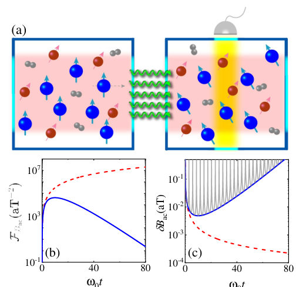
<figcaption class="paper-figure-caption"><b>Fig 1.</b> FIG. 1. (a) Schematic illustration of axion detection. The source cell (left) is tilted into the x-y plane by a π/2 pulse and the nuclear spins therein precess about the z axis, which induces a pseudomagnetic field acting on the 129Xe spins in the sensor cell (right). Time evolution of (b) the total QFI FBac = MNseFBac and (c) the pseudomagnetic-field un- certainty δBF ac(t) obtained from the QFI in the ideal (red dashed lines) and Markovian-approximate (blue solid lines) cases. δBP ac(t) obtained from the error-propagation formula is shown by the gray solid line. We use M = 4.32 × 104, Nse = 2.1 × 1017, κ = 0.1ω0, and Bac = 140 aT.</figcaption>
</figure>
<figure class="paper-figure-card">
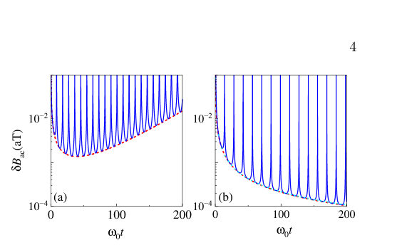
<figcaption class="paper-figure-caption"><b>Fig 2.</b> FIG. 3. Pseudomagnetic-field uncertainty δBP ac(t) (blue solid lines) obtained from measuring transverse polarization P(t) when (a) ωc = 25ω0 and (b) 50ω0. The red dashed lines represent the quantum Cram´er-Rao bound determined by the QFI, which matches with the solution of Eq. (8) (cyan line). Besides M = 4.32 × 104 and Nse = 2.1 × 1017, we use the same parameters values as Fig. 2.</figcaption>
</figure>
<figure class="paper-figure-card">
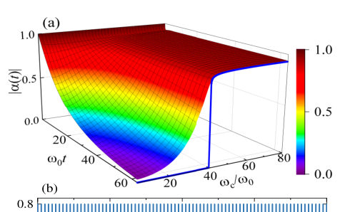
<figcaption class="paper-figure-caption"><b>Fig 3.</b> FIG. 2. (a) Time evolution of |α(t)| as a function of the cutoff frequency ωc. The blue solid line represents Z calcu- lated from the bound-state eigenenergy ϖb, which coincides with |α(∞)| = Z. (b) Energy spectrum of the whole sys- tem, featuring a continuum band and a branch of discrete bound states isolated within the band gap. The parameters are s = 1, η = 0.1, and Bac = 140 aT.</figcaption>
</figure>
<figure class="paper-figure-card">
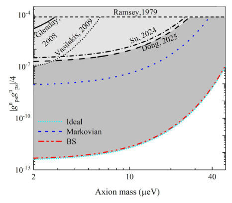
<figcaption class="paper-figure-caption"><b>Fig 4.</b> FIG. 4. Constraints on the coupling strength |gn psgn ps|/4 as a function of axion mass. The cyan dotted, blue dotted curves, and red double-dot-dashed denote the ideal, Markovian, and bound-state cases, respectively. The black curves show con- straints from the experimental results of Ramsey [85], Glen- day et al. [86], Vasilakis et al. [87], and Su et al. [13], and theoretical result of Dong et al. [57]. We use the same param- eter values as Fig. 2 except for ωc = 50ω0 and t = 100ω−1 0 .</figcaption>
</figure>
</div>

<p><strong>Summary.</strong> This paper proposes a noise-tolerant quantum metrology scheme using coupled ${}^{129}	ext{Xe}$ spins to search for axion dark matter. It rigorously compares standard Markovian noise models against non-Markovian dynamics. The key finding is that the presence of a bound state in the system's energy spectrum fundamentally restores the measurement sensitivity, allowing for exclusion limits far superior to those predicted by simpler noise approximations.</p>
<p><strong>Why it may be interesting.</strong> This work is highly relevant as it tackles the fundamental issue of noise resilience in quantum sensing, providing a concrete physical mechanism (bound state formation) to overcome environmental decoherence in searches for beyond-standard-model physics.</p>
<details>
<summary>Detailed structure</summary>
<p><strong>Main problem.</strong> The primary challenge is detecting axion dark matter due to its extremely weak coupling to standard model particles.</p>
<p><strong>Main result.</strong> The scheme demonstrates that non-Markovian dynamics, specifically when a bound state emerges in the energy spectrum, allows the measurement sensitivity to asymptotically recover its ideal, noise-free limit.</p>
<p><strong>Method.</strong> The analysis uses quantum metrology, calculating the Quantum Fisher Information (QFI) to determine the minimum achievable magnetic-field uncertainty ($\delta B$).</p>
<p><strong>Model / system.</strong> The system involves coupled ${}^{129}	ext{Xe}$ spin ensembles interacting with an axion field and a dissipative environment. The dynamics are modeled using a total Hamiltonian $H_{	ext{tot}} = 	ilde{H}_0 + H_{	ext{SE}}$, leading to non-Markovian evolution equations.</p>
<p><strong>Key observables.</strong> Axion coupling constant exclusion limit, magnetic-field uncertainty ($\delta B_{B_{	ext{ac}}}(t)$), and Quantum Fisher Information ($F_{B_{	ext{ac}}}$).</p>
<p><strong>Important parameters / regimes.</strong> The Larmor frequency tuning used to engineer bound-state formation; the comparison between Markovian and non-Markovian noise regimes.</p>
<p><strong>Assumptions / limitations.</strong> The analysis critically compares the results derived from the Markovian approximation against the full non-Markovian treatment, highlighting the necessity of the latter.</p>
<p><strong>Figures summary.</strong> Figures compare the time evolution of the QFI and the magnetic-field uncertainty ($\delta B$) in ideal vs. Markovian-approximated cases, showing the recovery of ideal scaling when a bound state is present.</p>
<p><strong>Paper structure.</strong> The paper first introduces the detection problem and the quantum metrology setup. It then develops the theoretical framework by analyzing the system dynamics under both Markovian and non-Markovian noise. The core of the work is demonstrating the superior performance of the non-Markovian approach when a bound state is engineered.</p>
</details>
<details>
<summary>Abstract</summary>
<p>The detection of axion dark matter poses a significant challenge due to its exceptionally weak coupling to standard-model particles. Here we develop a noise-tolerant quantum-metrology scheme based on coupled $^{129}$Xe spin ensembles to search for such weakly interacting particles. Within an experimentally accessible parameter regime, our scheme achieves an ideal exclusion limit on the axion coupling constant that is several orders of magnitude more stringent than that of conventional detection methods. We further investigate the performance of our scheme under dissipative noise and find that its robustness is fundamentally governed by the energy-spectrum structure of the composite spin-environment system. Remarkably, when a bound state emerges in the spectrum, the exclusion limit asymptotically recovers its ideal value in the non-Markovian dynamics, whereas under the Markovian approximation the limit deteriorates significantly due to noise. Our results establish a universal mechanism for noise-resilient exploration of beyond-standard-model physics, which can be practically implemented by engineering bound-state formation via tuning the Larmor frequency of the spin ensembles.</p>
</details>
<p><sub><a href="#top">↑ back to top</a></sub></p>

<p><a id="paper-2610.27792"></a></p>
<h3 id="narrowband-nonreciprocal-transmission-in-a-doppler-broadened-multilevel-atomic-system"><a href="http://arxiv.org/abs/2610.27792v1">Narrowband nonreciprocal transmission in a Doppler-broadened multilevel atomic system</a></h3>
<p><strong>Authors:</strong> Ying-Xue Zhang, Hui-Min Zhao, Yan-Kui Bai<br>
<strong>Type:</strong> theory · <strong>Category:</strong> other · <strong>PDF:</strong> <a href="https://arxiv.org/pdf/2610.27792v1">https://arxiv.org/pdf/2610.27792v1</a><br>
<strong>Analysis basis:</strong> full PDF text, analyzed in chunks
<strong>Topic relevance:</strong> <code>interference shaping light</code> <strong>3/5</strong> · <code>Keldysh / 2PI / non-Gaussian methods</code> <strong>1/5</strong> · <code>correlated / nonlocal dissipation</code> <strong>1/5</strong> · <code>driven-dissipative phase transition</code> <strong>1/5</strong> · <code>methods for driven-dissipative</code> <strong>1/5</strong></p>
<div class="figure-strip-hint">↔ Scroll figures horizontally</div>
<div class="paper-figures-scroll">
<figure class="paper-figure-card">
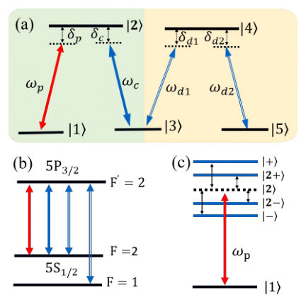
<figcaption class="paper-figure-caption"><b>Fig 1.</b> FIG. 1: (a) Schematic diagram of a five-level M-type atomic config- uration coupled to a weak probe field and three strong fields. (b) Rel- evant hyperfine levels of the 87Rb D2 line corresponding to the pro- posed level scheme. (c) Dressed-state picture, where the excited state |2⟩is coherently split into superposition branches (|2±⟩, |±⟩) gives rise to multiple interfering probe-coupling pathways. The resulting interference reshapes the absorption spectrum and enables tunable spectral narrowing [72, 75].</figcaption>
</figure>
<figure class="paper-figure-card">
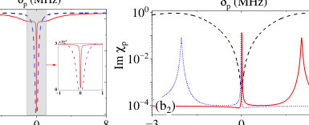
<figcaption class="paper-figure-caption"><b>Fig 2.</b> FIG. 2: Imaginary part of the probe susceptibility Im[χp] versus probe detuning δp. Absorption profiles of the Λ-type (blue dashed) and M-type (red solid) systems at T = 0 (a1) and 300 K (a2), respectively. Absorption profiles of the Λ-type (b1) and M-type (b2) systems, respectively, for selected atomic velocities: v = 0 (black dashed), +up (blue dotted), and −up (red solid), where up = p</figcaption>
</figure>
<figure class="paper-figure-card">
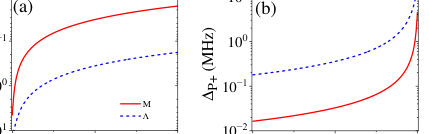
<figcaption class="paper-figure-caption"><b>Fig 3.</b> FIG. 3: (a) Left absorption peak ∆p−versus positive velocity and (b) right peak ∆p+ versus negative velocity for the M-system (red solid line) and Λ-system (blue dashed line). Parameters are as in Fig. 2.</figcaption>
</figure>
<figure class="paper-figure-card">
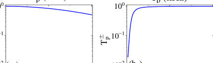
<figcaption class="paper-figure-caption"><b>Fig 4.</b> FIG. 4: Forward probe transmission spectra T + p as a function of probe detuning δp for different values of Ωd1 (a1) and Ωd2 (b1), re- spectively. Probe transmission at resonance (δp = 0) for forward and backward propagation as a function of Ωd1 (a2) and Ωd2 (b2). Relevant parameters are the same as in Fig. 2 except L = 2 mm.</figcaption>
</figure>
<figure class="paper-figure-card">
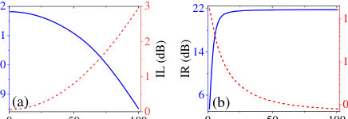
<figcaption class="paper-figure-caption"><b>Fig 5.</b> FIG. 5: Isolation ratio IR (a) and insertion loss IL (b) against Ωd1 (a) and Ωd2 (b). Relevant parameters are the same as in Fig. 4.</figcaption>
</figure>
</div>

<p><strong>Summary.</strong> This theoretical study details how a five-level M-type atomic system can achieve highly narrowband, nonreciprocal optical transmission even in the presence of thermal Doppler broadening. By employing two independent control fields, the researchers demonstrate independent tuning of the spectral linewidth and the isolation ratio, making the system ideal for compact, frequency-selective quantum optical filters.</p>
<p><strong>Why it may be interesting.</strong> This work directly addresses advanced topics in quantum optics, specifically utilizing EIT in hot atomic media to engineer nonreciprocal elements, which is crucial for quantum networking components.</p>
<details>
<summary>Detailed structure</summary>
<p><strong>Main problem.</strong> The paper investigates achieving narrowband nonreciprocal transmission in a Doppler-broadened multilevel atomic medium.</p>
<p><strong>Main result.</strong> The M-type system exhibits a narrower, direction-selective transparency window than standard $\Lambda$-systems, enabling high forward transmission and strong reverse suppression.</p>
<p><strong>Method.</strong> The analysis uses a density-matrix approach, incorporating Doppler averaging over the Maxwell-Boltzmann velocity distribution to calculate the susceptibility.</p>
<p><strong>Model / system.</strong> The system is modeled using a five-level M-type atomic configuration (e.g., $^ {87}	ext{Rb}$ D2 line) governed by a master equation. The physics is analyzed using a dressed-state framework.</p>
<p><strong>Key observables.</strong> Direction-dependent transmission ($T_+$, $T_-$), Isolation Ratio (IR), and Insertion Loss (IL).</p>
<p><strong>Important parameters / regimes.</strong> The two independent driving field strengths ($\Omega_{d1}, \Omega_{d2}$), temperature (Doppler broadening), and detunings ($\delta_n$).</p>
<p><strong>Assumptions / limitations.</strong> The analysis assumes steady-state solutions for the density matrix and that the population remains mainly in the lowest level when solving for the probe coherence.</p>
<p><strong>Figures summary.</strong> Figures illustrate the comparison of absorption profiles ($    ext{Im}[\chi_p]$) between M- and $\Lambda$-systems, and show the dependence of forward/backward transmission ($T_{\pm p}$) on the driving field strengths ($\Omega_{d1}, \Omega_{d2}$).</p>
<p><strong>Paper structure.</strong> The paper progresses from establishing the M-system model and its spectral narrowing compared to $\Lambda$-systems, to analyzing the directional transmission ($T_{\pm p}$) using the isolation ratio, and finally demonstrating independent control over spectral selectivity and nonreciprocity using two distinct driving fields.</p>
</details>
<details>
<summary>Abstract</summary>
<p>We theoretically investigate narrowband nonreciprocal transmission in a Doppler-broadened five-level M-type atomic medium. After Doppler averaging, the M-type system retains a narrow near-resonant electromagnetically induced transparency window that is narrower than that of a standard three-level $Λ$ system. This spectral narrowing is associated with the decreasing separation between the two inner dressed states as atomic velocity increases. The transparency window exhibits pronounced direction-dependent transmission, with high forward transmission and strong suppression in the reverse direction. The transparency linewidth and forward-backward probe transmission can be controlled via two independent driving fields, while the central transparency frequency is kept essentially unchanged. The resulting narrowband nonreciprocity supports high forward transmission together with strong suppression in the reverse direction, which is suitable for frequency-selective optical filtering and nonreciprocal optical transmission in thermal atomic media. Our scheme with these specific features is geared towards enabling compact vapor-cell-based nonreciprocal devices for quantum network applications.</p>
</details>
<p><sub><a href="#top">↑ back to top</a></sub></p>

<p><a id="paper-2610.28298"></a></p>
<h3 id="classical-spin-liquids-in-the-kagome-ising-model-and-their-link-with-magnetoelasticity"><a href="http://arxiv.org/abs/2610.28298v1">Classical spin liquids in the kagome Ising model, and their link with magnetoelasticity</a></h3>
<p><strong>Authors:</strong> T. Vignau Costa, J. Colbois, G. L. Rossini, F. Mila, D. C. Cabra, S. A. Grigera, R. A. Borzi<br>
<strong>Type:</strong> theory · <strong>Category:</strong> statistical mechanics · <strong>PDF:</strong> <a href="https://arxiv.org/pdf/2610.28298v1">https://arxiv.org/pdf/2610.28298v1</a><br>
<strong>Analysis basis:</strong> full PDF text, analyzed in chunks
<strong>Topic relevance:</strong> <code>analog quantum simulation</code> <strong>3/5</strong> · <code>methods for driven-dissipative</code> <strong>3/5</strong></p>
<div class="figure-strip-hint">↔ Scroll figures horizontally</div>
<div class="paper-figures-scroll">
<figure class="paper-figure-card">
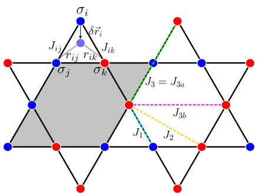
<figcaption class="paper-figure-caption"><b>Fig 1.</b> FIG. 1. Kagome lattice geometry studied on this work. A distortion at site i is indicated together with its effect on the neighboring exchange couplings and nearest-neighbors dis- tances. Circles represent Ising spins with positive (blue) and negative (red) orientation along the magnetic axis. The arrow indicates an ion displacement from the pristine lattice (bold dots) to its new position on the lattice (translucent dot). We represent with a dotted line the distances of first (light blue), second (yellow), and third (green, magenta) neighbors. We distinguish the two different third neighbors as being bridged by an intermediate site (green) or not (magenta). The unit cell is painted in gray.</figcaption>
</figure>
<figure class="paper-figure-card">
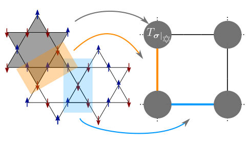
<figcaption class="paper-figure-caption"><b>Fig 2.</b> FIG. 2. Spirit of the tensor network construction. Left: a spin configuration on a patch of the kagome lattice, seen as a set of overlapping star tiles. Right: a patch of the 2D infinite tensor network representing the partition function, which is a weighted sum over all possible configurations. Each kagome star maps to a tensor in the tensor network construc- tion shown on the right, see Eq. (11). The contraction of neighboring tensors automatically enforces the matching con- ditions for overlapping stars, as highlighted by the blue and orange rectangles.</figcaption>
</figure>
<figure class="paper-figure-card">
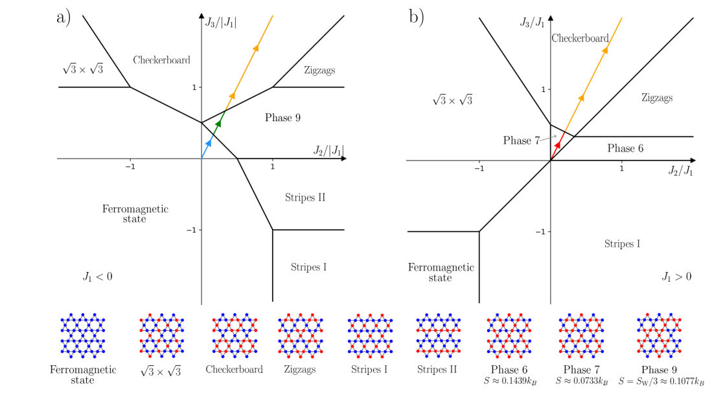
<figcaption class="paper-figure-caption"><b>Fig 3.</b> FIG. 3. Ground-state phase diagrams for the kagome lattice with J1 &lt; 0 (left) and J1 &gt; 0 (right). The overall topology of the phase diagrams agrees with that reported by Wolf and Schotte [10]. Labels are assigned in reference to ordered magnetic patterns (noticing that √</figcaption>
</figure>
<figure class="paper-figure-card">
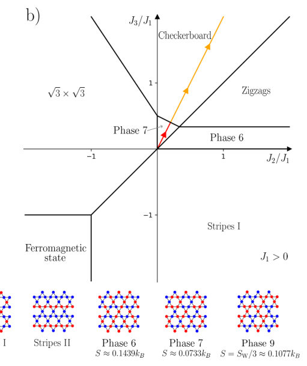
<figcaption class="paper-figure-caption"><b>Fig 4.</b> Figure 3 shows the zero-temperature phase diagram of the effective J1 −J2 −J3 Ising model. The left and right panels correspond to ferromagnetic (J1 &lt; 0) and anti- ferromagnetic (J1 &gt; 0) nearest-neighbor interactions, re- spectively. The overall topology agrees with the phase diagrams reported by Wolf and Schotte [10]. We note, however, that the labels of phases 2 and 3 in Ref. 10 appear to have been inadvertently interchanged relative to their descriptions in the text, in both the ferromag- netic and antiferromagnetic cases. Representative spin configurations for all ground states are shown below the corresponding phase diagrams, with blue and red circles denoting up and down spins,...</figcaption>
</figure>
<figure class="paper-figure-card">
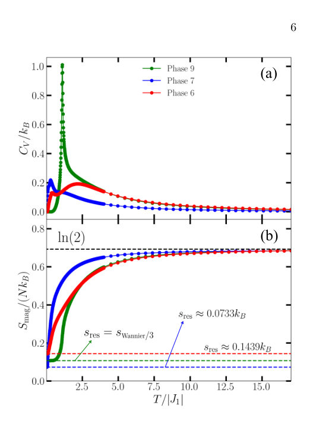
<figcaption class="paper-figure-caption"><b>Fig 5.</b> FIG. 4. Specific heat (panel a)) and entropy (b)) per spin as functions of temperature for the macroscopically degen- erate phases (Phase 6, 7, and 9). In each case the entropy approaches a non zero residual value indicated on the plot. The narrow peak in CV for Phase 9 shows strong finite size effects; they indicate the symmetry breaking transition be- tween up and down triangles. Much smoother features are observed for phases 6 and 7, with no indications of a second order phase transition (see Appendix). The colored dashed lines in panel b) indicate the zero-point entropy added to the integrated specific heat, so that the entropies reach the value of log(2) at high T. The data were...</figcaption>
</figure>
</div>

<p><strong>Summary.</strong> This work analyzes classical spin liquids on the kagome lattice by coupling the Ising spins to lattice elasticity, deriving an effective $J_1-J_2-J_3$ model. Using tensor networks and Monte Carlo simulations, the authors map out the zero-temperature phase diagram, revealing multiple degenerate phases with quasi-long-range order. The findings provide a detailed understanding of how lattice coupling stabilizes exotic magnetic ground states.</p>
<p><strong>Why it may be interesting.</strong> While focused on classical magnetism, the use of advanced numerical techniques like tensor networks to solve frustrated 2D classical models is highly relevant to quantum many-body physics simulations.</p>
<details>
<summary>Detailed structure</summary>
<p><strong>Main problem.</strong> The paper investigates the nature of classical spin liquids in the kagome Ising model and how their ground states are influenced by magnetoelastic coupling to lattice distortions.</p>
<p><strong>Main result.</strong> They discovered three macroscopically degenerate phases with extensive zero-temperature entropy and algebraically decaying spin correlations, which occupy extended regions of the parameter space.</p>
<p><strong>Method.</strong> The study employs a combination of tensor network methods (like CTMRG) and classical Monte Carlo simulations to analyze the effective spin-only Hamiltonian derived from the full magnetoelastic model.</p>
<p><strong>Model / system.</strong> The system is a nearest-neighbor Ising model on the kagome lattice coupled to elastic lattice distortions. This is mapped onto an effective $J_1-J_2-J_3$ Ising model Hamiltonian.</p>
<p><strong>Key observables.</strong> Zero-temperature phase diagram, residual entropy, spin-spin correlations (algebraically decaying), and structure factors exhibiting Bragg-like peaks.</p>
<p><strong>Important parameters / regimes.</strong> The coupling constants $J_1, J_2, J_3$, and the magnetoelastic coupling strength ($\alpha$ or related parameters).</p>
<p><strong>Assumptions / limitations.</strong> The derivation relies on approximating the coupling by integrating out lattice degrees of freedom using a linear expansion in small ionic displacements ($\delta r$).</p>
<p><strong>Figures summary.</strong> Figure 1 illustrates the lattice geometry and neighbor types. Figure 3 shows the zero-temperature phase diagrams for different coupling regimes, mapping out phase boundaries.</p>
<p><strong>Paper structure.</strong> The paper first derives an effective spin-only Hamiltonian by integrating out lattice fluctuations. It then uses tensor network and Monte Carlo methods to characterize the zero-temperature phase diagram of the resulting $J_1-J_2-J_3$ model, tracing the effects of magnetoelastic coupling.</p>
</details>
<details>
<summary>Abstract</summary>
<p>We investigate a nearest-neighbor Ising model on the kagome lattice coupled to elastic lattice distortions. By integrating out the lattice degrees of freedom, we derive an approximate spin-only description in terms of a kagome \(J_1\)-\(J_2\)-\(J_{3}\) Ising model with interactions extending to third nearest-neighbors. Using tensor network methods complemented by classical Monte Carlo simulations, we revisit its zero-temperature phase diagram and characterize the ground states studied more than thirty years ago. We discover three phases with extensive zero-temperature entropy and algebraically decaying spin correlations. Importantly, these states are not confined to fine-tuned points or frontiers between phases, but occupy extended areas of parameter space. Their quasi long-range order is reflected in Bragg-like peaks in the structure factors; we relate this, and other properties, to diverse phases found in Ising and Heisenberg models. Finally, we trace the trajectories generated by the magnetoelastic coupling through the effective-model phase diagram, explaining the emergence of self-frustration for the unfrustrated magnetoelastic model with ferromagnetic interactions.</p>
</details>
<p><sub><a href="#top">↑ back to top</a></sub></p>

<p><a id="paper-2610.28231"></a></p>
<h3 id="dynamical-mean-field-theory-for-real-materials-using-variational-quantum-compressed-time-evolution-on-a-quantum-computer"><a href="http://arxiv.org/abs/2610.28231v1">Dynamical Mean-Field Theory for Real Materials using Variational Quantum Compressed Time Evolution on a Quantum Computer</a></h3>
<p><strong>Authors:</strong> Stefan Wolf, Johannes Selisko, Timo Eckstein, Ludwig Nützel, Maximilian Amsler, Christopher Wever, Georgy Samsonidze, Thomas Eckl, Michael J. Hartmann<br>
<strong>Type:</strong> both · <strong>Category:</strong> strongly correlated electrons · <strong>PDF:</strong> <a href="https://arxiv.org/pdf/2610.28231v1">https://arxiv.org/pdf/2610.28231v1</a><br>
<strong>Analysis basis:</strong> full PDF text, analyzed in chunks
<strong>Topic relevance:</strong> <code>Keldysh / 2PI / non-Gaussian methods</code> <strong>3/5</strong> · <code>QC/QI experiment</code> <strong>1/5</strong> · <code>analog quantum simulation</code> <strong>1/5</strong> · <code>methods for driven-dissipative</code> <strong>1/5</strong></p>
<div class="figure-strip-hint">↔ Scroll figures horizontally</div>
<div class="paper-figures-scroll">
<figure class="paper-figure-card">
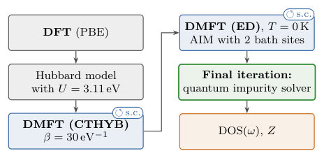
<figcaption class="paper-figure-caption"><b>Fig 1.</b> Figure 1. DFT+DMFT workflow for CaCuO2. A DFT calculation (PBE) is downfolded onto a single-band Hub- bard model with interaction strength U = 3.11 eV. The DMFT equations are first converged with a CTHYB solver at β = 30 eV−1 and subsequently with an ED solver at T = 0 K, using an Anderson impurity model with two bath sites (⟲s.c. denotes self-consistent DMFT loops). The final ED-DMFT iteration is recomputed with the quantum impurity solver to obtain the density of states DOS(ω) and the quasiparticle weight Z.</figcaption>
</figure>
<figure class="paper-figure-card">
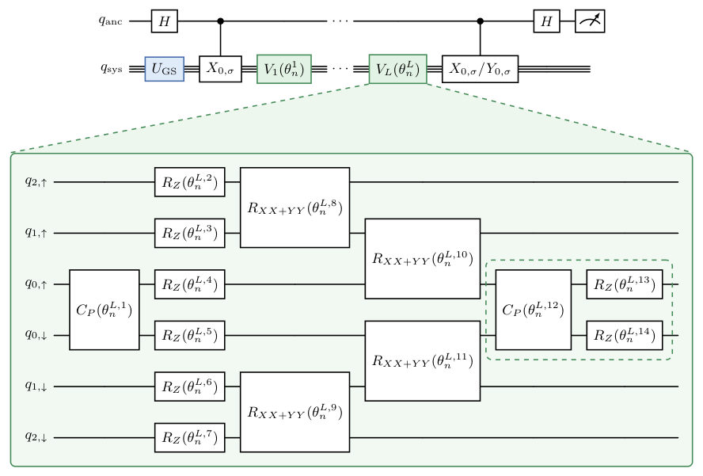
<figcaption class="paper-figure-caption"><b>Fig 2.</b> Figure 2. Hadamard test for measuring the Green’s function G(t) using the approximation V (θn) = VL(θL n) . . . V1(θ1 n) with L layers of the Hamiltonian variational ansatz. The final layer is followed by an additional CP -gate and RZ-gates acting on the impurity sites (as illustrated here). The circuit for the ground state preparation UGS is obtained via VQE and a Hamiltonian variational ansatz.</figcaption>
</figure>
<figure class="paper-figure-card">
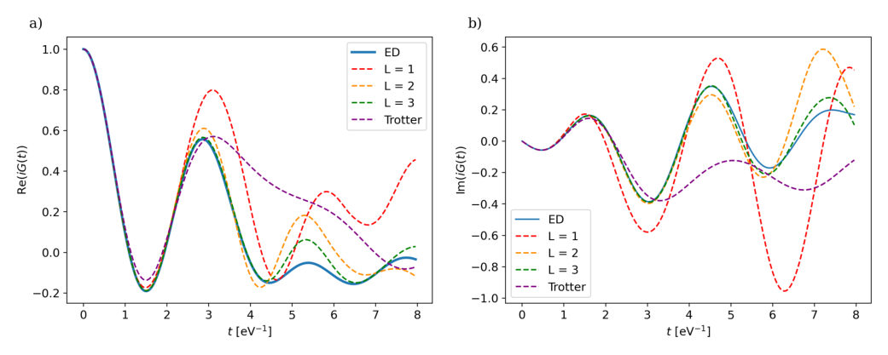
<figcaption class="paper-figure-caption"><b>Fig 3.</b> Figure 3. Real (a) and imaginary (b) components of iG(t) obtained with the circuits using the VQA-Compression algorithm with L ∈{1, 2, 3} in a state-vector simulation. We compare our trained circuits to a first-order Trotter expansion with the same circuit depth as L = 3.</figcaption>
</figure>
<figure class="paper-figure-card">
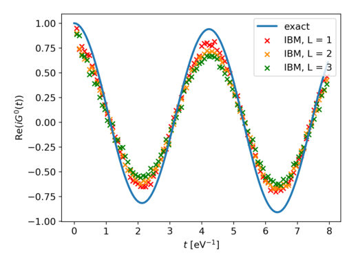
<figcaption class="paper-figure-caption"><b>Fig 4.</b> Figure 4. Real component of G0(t) evaluated on IBM Heron (ibm torino) for L ∈{1, 2, 3} compared to the exact analytic calculation showing the increase in damping dependent on L.</figcaption>
</figure>
<figure class="paper-figure-card">
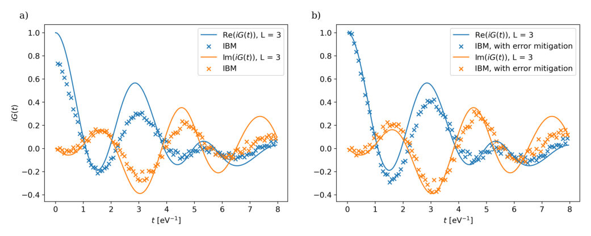
<figcaption class="paper-figure-caption"><b>Fig 5.</b> Figure 5. Real component of iG(t) obtained with the pretrained circuits using 65 two-qubit gates on the IBM Heron quantum computer without (a) and with (b) error mitigation. The number of shots is 8192 for each point in time.</figcaption>
</figure>
</div>

<p><strong>Summary.</strong> This work proposes a quantum algorithm to solve the electronic properties of cuprate superconductors using a $ ext{DFT}+   ext{DMFT}$ framework. It utilizes variational quantum compressed time evolution to calculate the Green's function on a quantum computer. While it successfully resolves key spectral features, the authors conclude that full, self-consistent simulations require fault-tolerant, post-$   ext{NISQ}$ hardware.</p>
<p><strong>Why it may be interesting.</strong> It directly tackles the simulation of strongly correlated electron systems, a major frontier in condensed matter physics, by proposing a concrete, albeit hardware-limited, quantum algorithm.</p>
<details>
<summary>Detailed structure</summary>
<p><strong>Main problem.</strong> The paper aims to apply quantum computing techniques to solve the complex electronic structure problem of strongly correlated materials, specifically investigating high-temperature superconductors.</p>
<p><strong>Main result.</strong> The method successfully resolves characteristic spectral features of $ ext{CaCuO}_2$, such as the Hubbard bands and quasiparticle peak, demonstrating feasibility despite current hardware limitations.</p>
<p><strong>Method.</strong> A hybrid quantum-classical workflow is employed, using a variational quantum compressed time evolution algorithm as an impurity solver within the Density Functional Theory + Dynamical Mean-Field Theory ($    ext{DFT}+   ext{DMFT}$) framework.</p>
<p><strong>Model / system.</strong> The physical system is $    ext{CaCuO}_2$, modeled using the Anderson Impurity Model ($ ext{AIM}$) derived from $   ext{DFT}$ calculations. The core calculation involves finding the time-dependent Green's function.</p>
<p><strong>Key observables.</strong> Density of states ($   ext{DOS}(\omega)$), quasiparticle weight ($Z$), and the time-dependent Green's function $G(t)$.</p>
<p><strong>Important parameters / regimes.</strong> Interaction strength $U = 3.11 	ext{ eV}$; $ ext{DMFT}$ bath coupling $eta = 30 	ext{ eV}^{-1}$; $ ext{NISQ}$ device limitations.</p>
<p><strong>Assumptions / limitations.</strong> The calculation relies on approximating the time evolution using variational quantum compressed time evolution and fitting the resulting signal via the Lehmann representation, necessitating post-$ ext{NISQ}$ hardware for full self-consistency.</p>
<p><strong>Figures summary.</strong> Figures illustrate the full $  ext{DFT}+   ext{DMFT}$ workflow, showing the resolved $ ext{DOS}(\omega)$ for $ ext{CaCuO}_2$ compared against classical benchmarks.</p>
<p><strong>Paper structure.</strong> The paper details the $    ext{DFT} 
ightarrow   ext{DMFT}$ workflow, focusing on implementing the impurity solver using variational quantum algorithms on quantum hardware, followed by data extraction and analysis.</p>
</details>
<details>
<summary>Abstract</summary>
<p>We design a hybrid quantum-classical computational workflow, combining density functional theory and dynamical mean-field theory, to investigate the electronic properties of CaCuO2, a parent structure of high-temperature cuprate superconductors. Our approach uses a quantum algorithm as an impurity solver that is based on variational quantum compressed time evolution to compute the time-dependent Greens function on an IBM Heron quantum device. Utilizing error mitigation techniques and a Lehmann representation fitting procedure, we extract the density of states from the signal in the accessible time regime. Despite the significant challenges rooted in the residual imprecision of currently accessible NISQ devices, we successfully resolve the characteristic features of the spectral function. However, we find that the required numerical accuracy for full DMFT self-consistency exceeds current hardware capabilities, indicating that practical real-material DMFT applications will necessitate post-NISQ hardware developments.</p>
</details>
<p><sub><a href="#top">↑ back to top</a></sub></p>

<p><a id="paper-2610.27368"></a></p>
<h3 id="dynamics-of-thermalization-in-classical-three-dimensional-many-body-systems-non-maxwellian-distributions-and-the-role-of-anisotropic-trapping"><a href="http://arxiv.org/abs/2610.27368v1">Dynamics of thermalization in classical three-dimensional many-body systems: Non-Maxwellian distributions and the role of anisotropic trapping</a></h3>
<p><strong>Authors:</strong> Roberto Onofrio, Bala Sundaram<br>
<strong>Type:</strong> theory · <strong>Category:</strong> statistical mechanics · <strong>PDF:</strong> <a href="https://arxiv.org/pdf/2610.27368v1">https://arxiv.org/pdf/2610.27368v1</a><br>
<strong>Analysis basis:</strong> full PDF text, analyzed in chunks
<strong>Topic relevance:</strong> <code>non-equilibrium universality</code> <strong>3/5</strong> · <code>scars &amp; prethermalization</code> <strong>3/5</strong></p>
<div class="figure-strip-hint">↔ Scroll figures horizontally</div>
<div class="paper-figures-scroll">
<figure class="paper-figure-card">
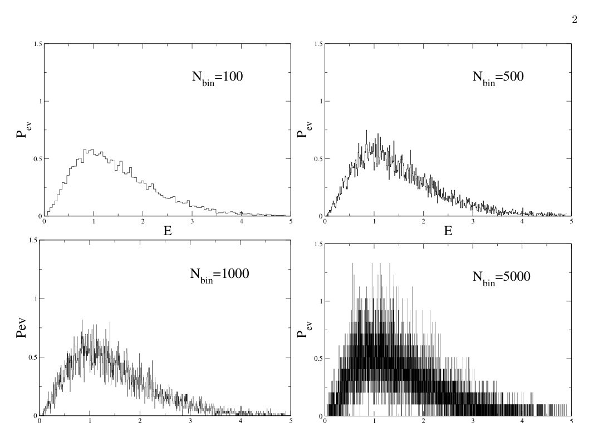
<figcaption class="paper-figure-caption"><b>Fig 1.</b> FIG. 1: Histograms of the same Maxwell-Boltzmann energy distribution generated by a sample of 104 particles with inverse temperature β = 2.0 and four choices of energy binning with Nbin = 100, 500, 1000, 5000, Emin = 0.06931 and Emax = 4.89855, such that the energy bin is (Emax −Emin)/Nbin.</figcaption>
</figure>
<figure class="paper-figure-card">
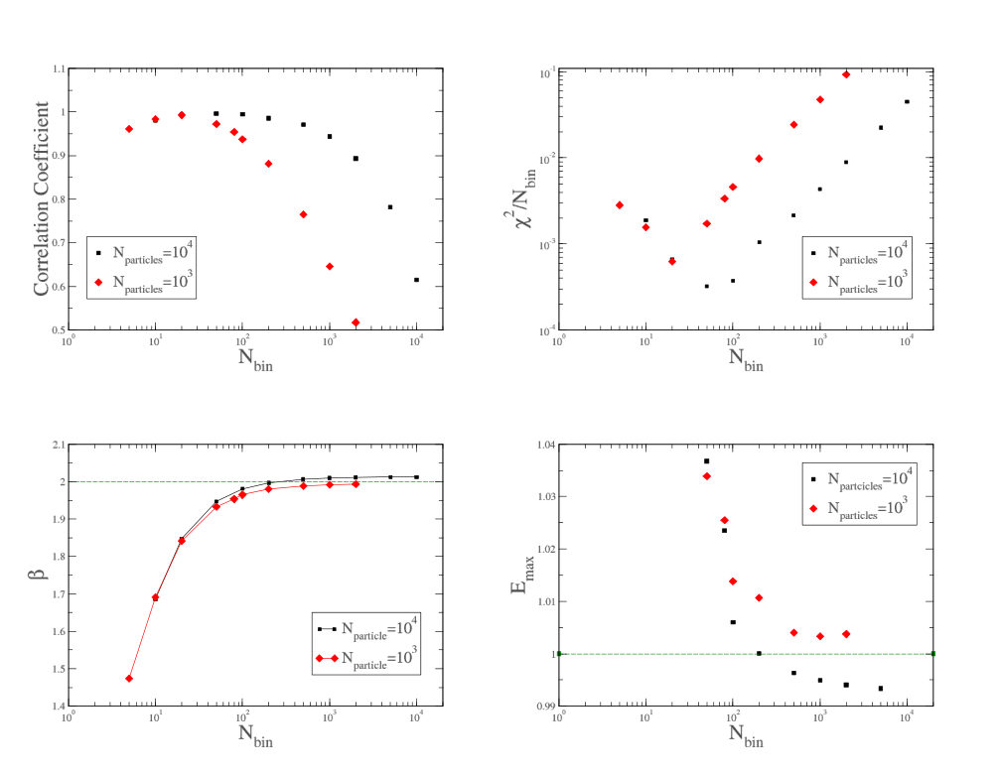
<figcaption class="paper-figure-caption"><b>Fig 2.</b> FIG. 2: Analysis of the histograms in Fig. 1, and additional cases, for determining the best fit with respect to Nbin. The correlation coefficient (top-left) shows a maximum around Nbin ≃50, confirmed by the reduced χ2 indicator (top-right). The curve of the inverse temperature shows instead a value closer to the one of the parent population for Nbin ≃300 (bottom- left), and this trend is confirmed in the behavior of the fitting curves around the peak value (bottom-right), with the case of Nbin = 500 being peaked closer to the expected value of Emax = 1 than the case of Nbin = 100. The dashed lines in the lower panels reflect the expected values for a MB energy distribution with inverse...</figcaption>
</figure>
<figure class="paper-figure-card">
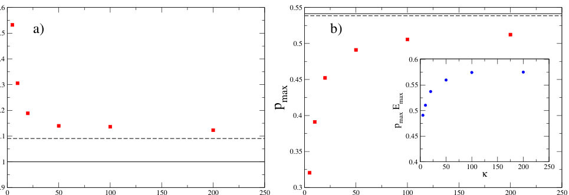
<figcaption class="paper-figure-caption"><b>Fig 3.</b> FIG. 3: Dependence on κ of the energy for which the κ-distribution has a maximum in the probability density (a), and corresponding value of the probability density (b) determined from a sample of 104 particles, with their energies partitioned into 102 bins, assuming β = 2. In each plot, the continuous line shows the theoretical expectation from a MB distribution for the same inverse temperature, as from Eqs. (2) and (3), respectively. The dashed line shows the corresponding realization obtained with a fit to an energy distribution, generated from properly weighted random numbers and the same nominal inverse temperature, with an MB distribution, for the same sample of 104 particles. In the...</figcaption>
</figure>
<figure class="paper-figure-card">
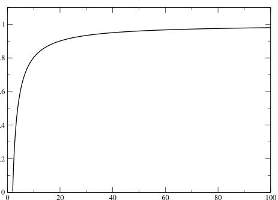
<figcaption class="paper-figure-caption"><b>Fig 4.</b> FIG. 5: Dependence of the ξ parameter defined in Eq. 12 on κ.</figcaption>
</figure>
<figure class="paper-figure-card">
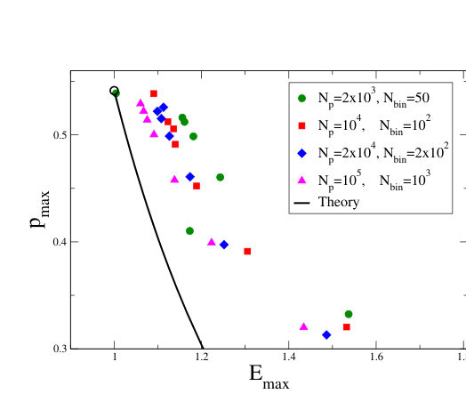
<figcaption class="paper-figure-caption"><b>Fig 5.</b> FIG. 4: Plot in the Emax −pmax plane, with points obtained for various values of κ (κ = 5, 10, 20, 50, 100, 200 from bot- tom right, plus the point for the corresponding Maxwell- Boltzmann sample on top left) with different sample popu- lations and binnings. The continuous curve is obtained from Eqs. 6 and 7, and the case of the Maxwell-Boltzmann proba- bility density is highlighted as a empty circle on the upper-left of the curve.</figcaption>
</figure>
</div>

<p><strong>Summary.</strong> This work analyzes the thermalization dynamics in 3D classical many-body systems, revealing that the energy distributions transiently deviate from the expected Maxwell-Boltzmann form towards $\kappa$-distributions. Furthermore, it rigorously examines how the scaling of the interaction energy depends on the anisotropy of the trapping potential, linking it to effective dimensionality exponents.</p>
<p><strong>Why it may be interesting.</strong> The study provides detailed insights into non-equilibrium dynamics, showing how transient non-Maxwellian states ($\kappa$-distributions) emerge during thermalization, which is crucial for understanding energy transport in complex, interacting quantum/classical systems.</p>
<details>
<summary>Detailed structure</summary>
<p><strong>Main problem.</strong> The paper investigates the dynamics of thermalization in classical three-dimensional many-body systems, focusing on deviations from expected Maxwell-Boltzmann energy distributions and the influence of anisotropic trapping.</p>
<p><strong>Main result.</strong> The system exhibits transient non-Maxwellian energy distributions, characterized by $\kappa$-distributions, and the scaling of the interaction energy exponent ($\alpha$) depends critically on the trapping anisotropy and interaction range.</p>
<p><strong>Method.</strong> The study employs numerical simulations of the equations of motion derived from a complex Hamiltonian, supplemented by analytical derivations of scaling exponents and iterative equations for inverse temperatures.</p>
<p><strong>Model / system.</strong> The model involves two interacting baths of harmonic oscillators in three dimensions, described by a Hamiltonian that includes both free harmonic oscillator terms and an interaction term. The analysis extends from 1D to 3D systems.</p>
<p><strong>Key observables.</strong> Energy distribution shape ($\kappa$-distributions vs. MB), peak location ($E_{\max}$), peak probability density ($p_{\max}$), and the anomalous scaling exponent ($\alpha$) of the interaction energy.</p>
<p><strong>Important parameters / regimes.</strong> Interaction strength ($\gamma$), interaction range ($\lambda$), and the degree of trapping anisotropy (frequency ratios $\omega_x : \omega_y : \omega_z$).</p>
<p><strong>Assumptions / limitations.</strong> The analysis relies on approximations for the average interaction energy and assumes that scaling behavior can be mapped onto effective dimensionality, though limitations exist for very strong coupling.</p>
<p><strong>Figures summary.</strong> Figures illustrate the dependence of the energy distribution peak on binning choices, the deviation factor $\xi(\kappa)$ over time, and the scaling exponent $\alpha$ as a function of the interaction range $\lambda$ for different trapping geometries.</p>
<p><strong>Paper structure.</strong> The paper progresses by first establishing the non-Maxwellian nature of the energy distribution in 3D, then analyzing the time evolution of this deviation using a dimensionless ratio $\xi(\kappa)$, and finally investigating the scaling of the interaction energy exponent $\alpha$ under varying degrees of trapping anisotropy.</p>
</details>
<details>
<summary>Abstract</summary>
<p>The physics of interacting baths is of interest in a variety of contexts, ranging from ultracold atoms to ionized gases. While many features can already be captured in a one-dimensional model, others are specific to the situation of two or three-dimensional systems. In this paper, we focus on three-dimensional features of a model for thermalization between two baths that we have explored in earlier publications. In contrast to the one-dimensional situation we show that, en route to thermalization, deviations from the Maxwell-Boltzmann energy distributions more akin to $κ$-distributions are observed. In three dimensions, these can be seen in changes at the peak of the distribution, which is precluded by the expected monotonic behavior of the energy distributions in one dimension. Furthermore, we consider thermalization for anisotropic trapping and explore its role in the onset of anomalous scaling with respect to the particle number. These results may be pertinent to the understanding of the interplay between turbulent behavior and nonlinearities for a variety of many-body classical systems.</p>
</details>
<p><sub><a href="#top">↑ back to top</a></sub></p>

<p><a id="paper-2610.27404"></a></p>
<h3 id="non-classicality-in-math341math-system-via-negativity-and-geometric-quantum-discord"><a href="http://arxiv.org/abs/2610.27404v1">Non-Classicality in $tW$ system via negativity and geometric quantum discord</a></h3>
<p><strong>Authors:</strong> Amir Subba, Yu Shi<br>
<strong>Type:</strong> theory · <strong>Category:</strong> other · <strong>PDF:</strong> <a href="https://arxiv.org/pdf/2610.27404v1">https://arxiv.org/pdf/2610.27404v1</a><br>
<strong>Analysis basis:</strong> full PDF text, analyzed in chunks
<strong>Topic relevance:</strong> <code>methods for driven-dissipative</code> <strong>3/5</strong> · <code>quantum measurements</code> <strong>3/5</strong></p>
<div class="figure-strip-hint">↔ Scroll figures horizontally</div>
<div class="paper-figures-scroll">
<figure class="paper-figure-card">
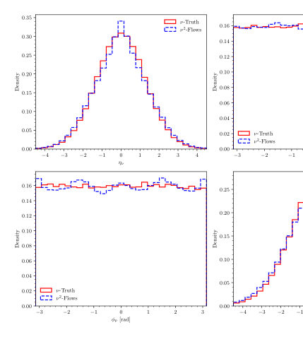
<figcaption class="paper-figure-caption"><b>Fig 1.</b> Figure 1. Angular distributions of the reconstructed and parton-truth neutrinos. Shown are the pseudorapidity η and azimuthal angle ϕ of the neutrino and antineutrino, together with the angular separations ∆η and ∆ϕ between the neutrino–antineutrino pair.</figcaption>
</figure>
<figure class="paper-figure-card">
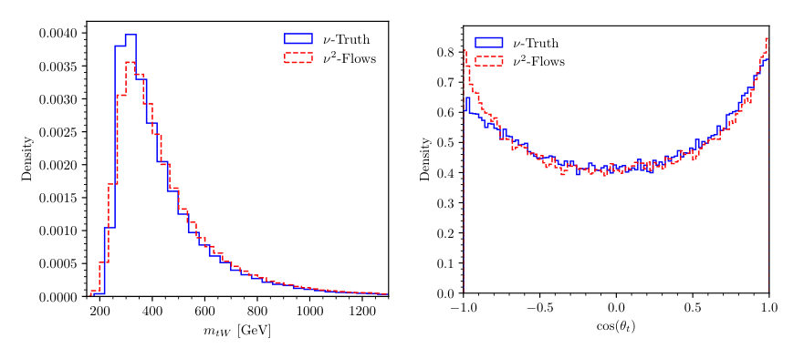
<figcaption class="paper-figure-caption"><b>Fig 2.</b> Figure 2. Distributions of the tW invariant mass mtW (top) and the laboratory-frame polar angle cos θt of the reconstructed top quark (bottom) at truth and reconstructed level.</figcaption>
</figure>
<figure class="paper-figure-card">
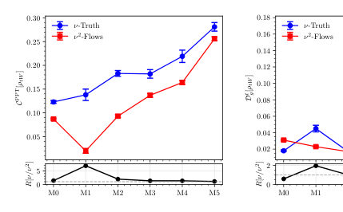
<figcaption class="paper-figure-caption"><b>Fig 3.</b> Figure 3. Standard Model predictions for the PPT-based entanglement measure (right panel) and geometric quantum discord w.r.t to top quark (middle panel) and W boson (left panel) as functions of mtW at ν−truth and reconstruction level.</figcaption>
</figure>
<figure class="paper-figure-card">
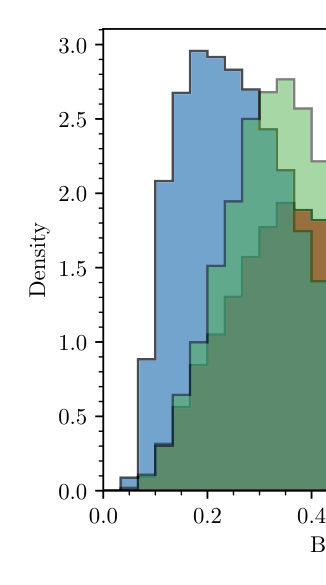
<figcaption class="paper-figure-caption"><b>Fig 4.</b> Figure 4. Boosted decision tree output score distribution for signal tW and two reducible back- grounds viz. t¯t and WWj processes .</figcaption>
</figure>
<figure class="paper-figure-card">
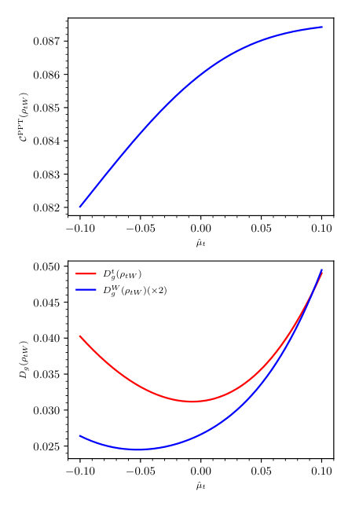
<figcaption class="paper-figure-caption"><b>Fig 5.</b> Figure 5. Distribution of negativity and geometric quantum discord for tW system in presence of anomalous CEMDM of top quark at the reconstruction level. The distribution for DW g are rescaled by a factor of two for visual comparison.</figcaption>
</figure>
</div>

<p><strong>Summary.</strong> This paper performs a phenomenological study to quantify non-classical correlations in the quantum state of the $tW$ system produced at the LHC. It reconstructs the joint spin-polarization density matrix using decay kinematics and machine learning methods to account for missing neutrinos. The key goal is to use quantum information measures like negativity and quantum discord to search for signs of new physics, such as anomalous top quark dipole moments.</p>
<p><strong>Why it may be interesting.</strong> While the primary application is in particle physics phenomenology, the methodology—reconstructing a high-dimensional quantum state from limited, noisy, and incomplete measurements using advanced ML techniques—is highly relevant to open quantum systems and quantum tomography in complex physical settings.</p>
<details>
<summary>Detailed structure</summary>
<p><strong>Main problem.</strong> The study investigates the presence and quantification of non-classical correlations within the mixed-dimensional quantum state of the $tW$ system produced in high-energy proton-proton collisions.</p>
<p><strong>Main result.</strong> The authors report on the sensitivity reach of quantum observables, such as negativity and geometric quantum discord, to constrain new physics parameters like anomalous dipole moments at current and future LHC energies.</p>
<p><strong>Method.</strong> The joint spin-polarization density matrix is reconstructed from the angular distributions of the leptonic decay products, utilizing conditional normalizing flows to handle the under-constrained reconstruction of missing neutrinos.</p>
<p><strong>Model / system.</strong> The system is modeled as a qubit-qutrit density matrix ($
ho_{tW} \in \mathcal{H}_2 \otimes \mathcal{H}_3$), representing the spin of the top quark (qubit) and the polarization of the W boson (qutrit) from $pp 	o tW$ production at 13 TeV.</p>
<p><strong>Key observables.</strong> Peres–Horodecki negativity, geometric quantum discord (GQD), top quark and W boson polarization parameters, and spin correlation parameters.</p>
<p><strong>Important parameters / regimes.</strong> Collision energy ($\sqrt{s}=13$ TeV), invariant mass ($m_{tW}$), and anomalous chromomagnetic/chromoelectric dipole moments of the top quark.</p>
<p><strong>Assumptions / limitations.</strong> The analysis assumes that the top quark decay and W boson decay products provide sufficient angular information to reconstruct the joint spin-polarization state, and that the reconstruction of missing neutrinos via normalizing flows is accurate.</p>
<p><strong>Paper structure.</strong> The paper follows a flow from defining the physical process ($tW$ production) to constructing the quantum state representation ($
ho_{tW}$ in Bloch form), detailing the reconstruction techniques (using decay kinematics and ML flows), and finally applying quantum information measures (Negativity, GQD) to test Standard Model predictions and search for new physics effects.</p>
</details>
<details>
<summary>Abstract</summary>
<p>We perform a phenomenological study of non-classical correlations in the mixed-dimensional qubit-qutrit system realized by leading order $pp\to tW$ production at $\sqrt{s}=13$ TeV in the leptonic final state. The two missing neutrinos are reconstructed with conditional normalizing flows trained on simulated detector-level objects, and the joint spin density matrix $ρ_{tW}\in\mathcal{H}_2\otimes\mathcal{H}_3$ is obtained in a generalized Bloch representation from the angular distributions of the leptonic decay products. Non-classical correlations are quantified using the Peres--Horodecki negativity and geometric quantum discord. We quantify the correlations at different region of $m_{tW}$ at the reconstruction level within the Standard Model and the impact of two reducible backgrounds viz. $t\bar{t}$ and $WWj$ processes, tagged using boosted decision trees. We further study the behavior of correlations in presence of anomalous chromomagnetic and chromoelectric dipole moments of the top quark. The sensitivity reach of the quantum observables along with polarization and spin correlation parameters are reported for current LHC and future HL-LHC scenario.</p>
</details>
<p><sub><a href="#top">↑ back to top</a></sub></p>

<p><a id="paper-2610.27060"></a></p>
<h3 id="spectral-signatures-of-hidden-order-and-hidden-quantum-critical-points"><a href="http://arxiv.org/abs/2610.27060v1">Spectral signatures of hidden order and hidden quantum critical points</a></h3>
<p><strong>Authors:</strong> Reja H. Wilke, Henning Schlömer, Sebastian Paeckel, Annabelle Bohrdt, Fabian Grusdt<br>
<strong>Type:</strong> theory · <strong>Category:</strong> strongly correlated electrons · <strong>PDF:</strong> <a href="https://arxiv.org/pdf/2610.27060v1">https://arxiv.org/pdf/2610.27060v1</a><br>
<strong>Analysis basis:</strong> full PDF text, analyzed in chunks
<strong>Topic relevance:</strong> <code>analog quantum simulation</code> <strong>3/5</strong> · <code>methods for driven-dissipative</code> <strong>2/5</strong> · <code>quantum measurements</code> <strong>1/5</strong></p>
<div class="figure-strip-hint">↔ Scroll figures horizontally</div>
<div class="paper-figures-scroll">
<figure class="paper-figure-card">
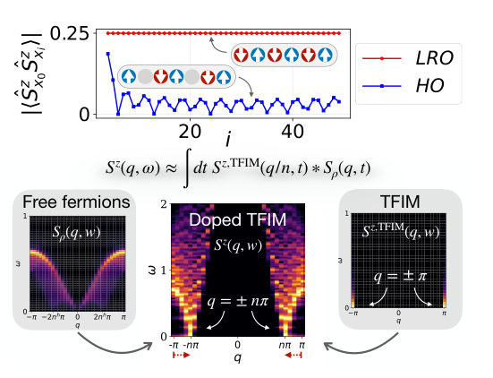
<figcaption class="paper-figure-caption"><b>Fig 1.</b> Figure 1. Spectral signatures of hidden order. Hidden order (HO) phases are characterized by a nonlocal realization of a spontaneously broken symmetry. Due to their nonlocal char- acter, they cannot be detected via conventional equal-time two-point correlation functions, as is the case for antiferro- magnetic long-range order (LRO). Upper panel: Comparison of the equal-time two-point correlator | ˆSz x0 ˆSz xi| in a HO phase (blue curve) and an antiferromagnetic LRO phase (red curve). Insets show exemplary spin configurations in the respective phases. Lower panel: Sketch of our approach. We probe HO through its spectral fingerprints obtained via dynamical two- point correlators, see Fig. 4...</figcaption>
</figure>
<figure class="paper-figure-card">
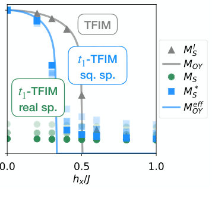
<figcaption class="paper-figure-caption"><b>Fig 2.</b> Figure 2. Detecting hidden order in squeezed space. a) Il- lustration of a spin configuration in real and squeezed space, used to compute the corresponding staggered magnetizations, MS and M ∗ S (see section I). b) Staggered magnetizations in real and squeezed space for the t1-TFIM as a function of hx at t1/J = 1. The squeezed-space staggered magnetization M ∗ S (blue squares) remains finite for hx ≤0.3J, indicating the presence of antiferromagnetic long-range order in squeezed space, referred to as hidden order. By contrast, the real- space staggered magnetization MS (green circles) does not detect this order. For reference, we also show the real-space staggered magnetization of the...</figcaption>
</figure>
<figure class="paper-figure-card">
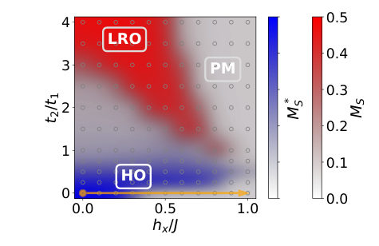
<figcaption class="paper-figure-caption"><b>Fig 3.</b> Figure 3. Numerical study of the phase diagram of the t1−t2− TFIM eq. (1). The figure displays the staggered magneti- zation in real space, MS (red), and in squeezed space, M ∗ S (blue), represented by two overlaid color maps whose opac- ity increases with the magnitude of the corresponding order parameter. Extended regions exhibiting LRO and HO are observed throughout the phase diagram. For intermediate values of t2 and hx &lt; 0.5J, however, neither type of order is present. The orange arrow indicates the hx scan shown in Fig. 2 and Fig. 4. The phase diagram is constructed from the indicated data points (gray circles), computed for L = 90, Nh = 24, and t1/J = 1. Additional details on the...</figcaption>
</figure>
<figure class="paper-figure-card">
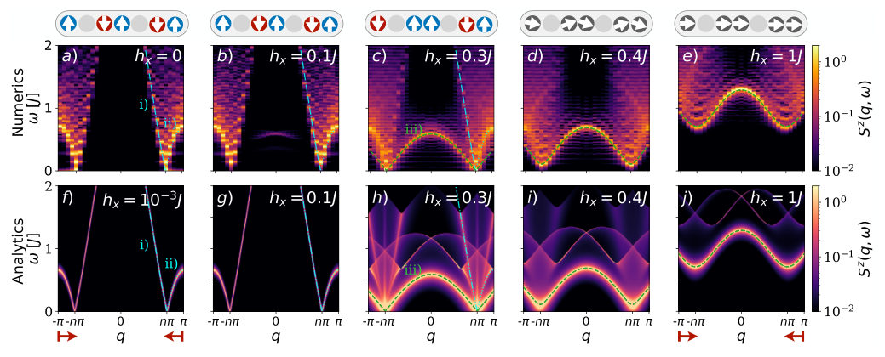
<figcaption class="paper-figure-caption"><b>Fig 4.</b> Figure 4. Comparison between numerical and analytical results for the dynamical spin structure factor Sz(q, ω) of the t1- TFIM eq. (1) for an hx scan across the hidden QCP at hc x = 0.3J. The schematics at the top of the figure illustrate the corresponding ground-state configurations on which the excitations are performed. a)–e) Numerically computed DSF Sz(q, ω) across the transition from the HO phase to the PM phase. f)–j) Analytical results for the corresponding DSF, obtained from the expressions Sz O(q, ω) for hx &lt; hc x [f)–g)] and Sz PM(q, ω) for hx ≥hc x [h)–j)]. For hx &lt; hc x, we highlight the linear dispersive branches [feature i)], corresponding to eq. (14) by dash-dotted cyan...</figcaption>
</figure>
<figure class="paper-figure-card">
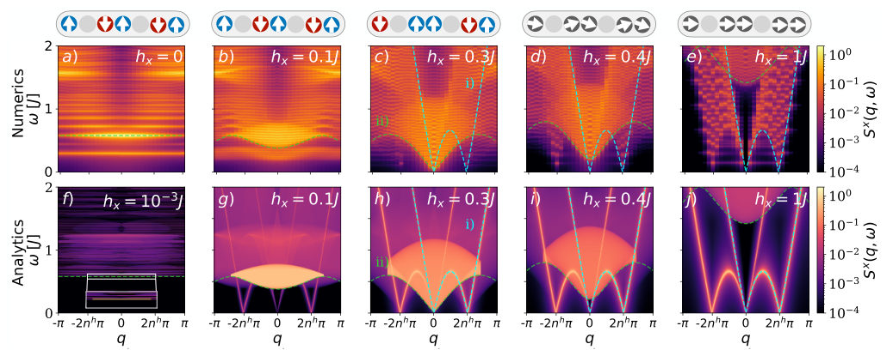
<figcaption class="paper-figure-caption"><b>Fig 5.</b> Figure 5. Comparison between numerical and analytical results for the dynamical spin structure factor Sx(q, ω) of the t1- TFIM eq. (1) for an hx scan across the hidden QCP at hc x = 0.3J. The schematics at the top of the figure illustrate the corresponding ground-state configurations on which the excitations are performed. a)–e) Numerically computed DSF Sx(q, ω) across the transition from the HO phase to the PM phase. f)–j) Analytical results for the corresponding DSF across the same transition. The inset in f) zooms in on the lowest-lying analytical energy level. Throughout all subplots, the analytical lower bound of the spin-continuum in eq. (16) is indicated by a dashed green line...</figcaption>
</figure>
</div>

<p><strong>Summary.</strong> This work demonstrates that hidden-order quantum phases, which defy detection by standard local measurements, can be spectroscopically identified in doped spin chains. By analyzing the dynamical spin structure factor using the TFIM model, the authors map out the phase diagram and predict characteristic spectral fingerprints for both the hidden order phase and gapless topological states. This establishes spectroscopy as a powerful, practical tool for probing exotic quantum matter.</p>
<p><strong>Why it may be interesting.</strong> The connection drawn between spectroscopic measurements (RIXS/neutron scattering) and abstract theoretical concepts like hidden order and SPT phases provides a concrete, measurable pathway for experimental condensed matter physicists.</p>
<details>
<summary>Detailed structure</summary>
<p><strong>Main problem.</strong> Hidden-order phases, which break symmetry but lack conventional local order parameters, are difficult to study because their order is characterized by nonlocal (string) parameters.</p>
<p><strong>Main result.</strong> The authors show that the spectral signatures of hidden order and gapless SPT phases can be directly probed using dynamical two-point response functions measurable by RIXS and neutron scattering.</p>
<p><strong>Method.</strong> The study employs numerical techniques like matrix product states and analytical methods such as the squeezed space construction to analyze the dynamical spin structure factor.</p>
<p><strong>Model / system.</strong> The investigation focuses on the doped transverse field Ising model (TFIM), a minimal model exhibiting a strong interplay between spin and charge degrees of freedom, analyzed in the context of the $t_1-t_2$-Fermi-Hubbard Model.</p>
<p><strong>Key observables.</strong> Dynamical two-point response functions, specifically the dynamical spin structure factor ($\hat{S}_z(q, \omega)$), and the squeezed space staggered magnetization ($M^*_S$).</p>
<p><strong>Important parameters / regimes.</strong> Doping concentration, transverse field strength ($h_x$), and hopping amplitudes ($t_1, t_2$).</p>
<p><strong>Assumptions / limitations.</strong> The analysis relies on the assumption that the dynamical structure factor can be decomposed into components related to charge and spin fluctuations, and uses continuum approximations in some calculations.</p>
<p><strong>Figures summary.</strong> Figures compare local vs. hidden order parameters ($M_S$ vs $M^*_S$) across phase diagrams, and show the distinct spectral fingerprints (e.g., linear dispersive branches, $ ext{K}_0$ forms) of the hidden order and gapless SPT phases.</p>
<p><strong>Paper structure.</strong> The paper first establishes the difficulty of detecting hidden order using local correlators. It then applies the model to the doped TFIM, using the squeezed space formalism to define hidden order parameters. Finally, it calculates and analyzes the dynamical structure factor using advanced spectral techniques to map out the phase diagram and identify spectral fingerprints.</p>
</details>
<details>
<summary>Abstract</summary>
<p>Hidden-order phases elude the conventional Ginzburg-Landau framework: although they spontaneously break symmetry, their order remains invisible to standard local two-point correlators. Instead, they are typically characterized by nonlocal (string) order parameters and are believed to underlie a range of exotic quantum states, such as symmetry-protected topological (SPT) phases. While hidden correlations have previously been detected through nonlocal observables in quantum gas microscope experiments, in realistic solid-state systems multipoint observables are typically inaccessible and the signatures of hidden order remain largely unexplored. In this work, we show that hidden order in doped spin chains can be directly probed through dynamical two-point response functions measurable by resonant inelastic X-ray scattering (RIXS) and neutron scattering. Focusing on a minimal model, we numerically identify clear spectral fingerprints of both the hidden-order phase, its associated hidden quantum critical point as well as a specific group of gapless SPT phases. Complementing our numerical results with analytical insights, we uncover the microscopic origin of these spectral signatures and demonstrate how they emerge from the interplay between spin and charge degrees of freedom. Together, our results establish spectroscopy as a practical probe of hidden order and gapless SPT phases and provide a unified understanding of the low-energy physics governing these unconventional quantum phases.</p>
</details>
<p><sub><a href="#top">↑ back to top</a></sub></p>

<p><a id="paper-2610.27471"></a></p>
<h3 id="engineering-math1208math-and-math1209math-interactions-between-two-remote-superconducting-qubits-via-a-multimode-waveguide"><a href="http://arxiv.org/abs/2610.27471v1">Engineering \(XY\) and \(ZZ\) interactions between two remote superconducting qubits via a multimode waveguide</a></h3>
<p><strong>Authors:</strong> Da-Wei Wang, Yu-xi Liu<br>
<strong>Type:</strong> theory · <strong>Category:</strong> quantum information and computing · <strong>PDF:</strong> <a href="https://arxiv.org/pdf/2610.27471v1">https://arxiv.org/pdf/2610.27471v1</a><br>
<strong>Analysis basis:</strong> full PDF text, analyzed in chunks
<strong>Topic relevance:</strong> <code>interference shaping light</code> <strong>3/5</strong> · <code>QC/QI experiment</code> <strong>1/5</strong> · <code>analog quantum simulation</code> <strong>1/5</strong></p>
<div class="figure-strip-hint">↔ Scroll figures horizontally</div>
<div class="paper-figures-scroll">
<figure class="paper-figure-card">
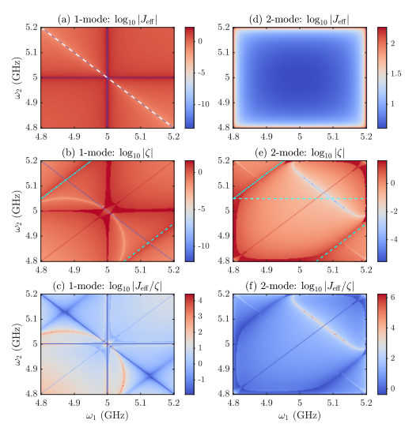
<figcaption class="paper-figure-caption"><b>Fig 1.</b> FIG. 2. Comparison of the effective XY and ZZ in- teractions mediated by single waveguide mode [(a)–(c)] and two waveguide modes [(d)–(f)]. The logarithmic interac- tion strengths log10 |Jeff| are shown in (a) and (d), while log10 |ζ| are shown in (b) and (e). The corresponding ratios log10 |Jeff/ζ| are shown in (c) and (f) in the (ω1, ω2) param- eter plane. For the single-mode case, the mode frequency is ωr = ωr,0, whereas for the two-mode case the mode frequen- cies are ωr,1 = ωr,0 −∆FSR/2 and ωr,2 = ωr,0 + ∆FSR/2. The parameters are ∆FSR = 0.4 GHz, gµ/2π = 0.02 GHz, and αµ/2π = −0.25 GHz.</figcaption>
</figure>
<figure class="paper-figure-card">
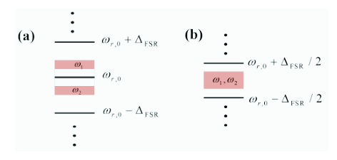
<figcaption class="paper-figure-caption"><b>Fig 2.</b> FIG. 3. Central qubit-frequency allocation windows for even- and odd-mode configurations. Black horizontal lines denote the operational waveguide modes, and the shaded regions de- note the central windows considered in the finite-mode anal- ysis.</figcaption>
</figure>
<figure class="paper-figure-card">
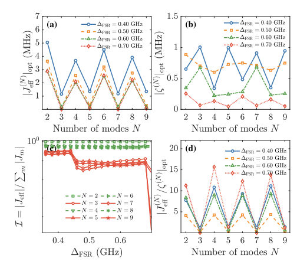
<figcaption class="paper-figure-caption"><b>Fig 3.</b> FIG. 4. Optimized interaction characteristics in finite mul- timode transmission-lines. (a) Optimized XY interaction |J(N) eff|opt. (b) ZZ interaction strength |ζ(N)|opt evaluated at the XY interaction suppressed operating points. (c) XY in- teraction cancellation factor I = |Jeff|/ P</figcaption>
</figure>
<figure class="paper-figure-card">
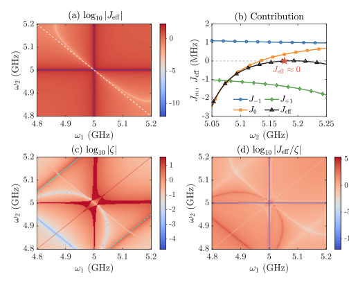
<figcaption class="paper-figure-caption"><b>Fig 4.</b> FIG. 5. (a) Effective XY interaction log10 |Jeff|. The dashed line indicates the single-mode two-photon resonance condi- tion ω1 + ω2 = 2ωr,0. (b) Mode-resolved exchange contribu- tions as functions of ω2 for fixed ω1/2π = 4.866 GHz. (c) ZZ interaction log10 |ζ|. (d) Interaction ratio log10 |Jeff/ζ|. The parameters are ωr,0/2π = 5.0 GHz, ∆FSR = 0.4 GHz, gµ/2π = 0.015 GHz, and αµ/2π = −0.25 GHz.</figcaption>
</figure>
<figure class="paper-figure-card">
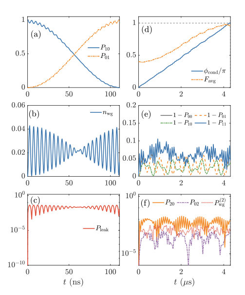
<figcaption class="paper-figure-caption"><b>Fig 5.</b> FIG. 6. Comparison between XY -dominated and ZZ- dominated dynamics in finite multimode transmission-lines. The common parameters are ∆FSR = 0.4 GHz, gµ/2π = 0.015 GHz, and αµ/2π = −0.25 GHz. The left column, pan- els (a)–(c), shows the two-mode configuration with ωr,1/2π = 5.0 GHz and ωr,2/2π = 5.4 GHz, at the selected qubit op- erating point ω1/2π = ω2/2π = 5.2 GHz. The right col- umn, panels (d)–(f), shows the three-mode configuration with ωr,m/2π = 4.6, 5.0, 5.4 GHz, at ω1/2π = 5.176 GHz and ω2/2π = 4.866 GHz. (a) Coherent population transfer be- tween the computational states |10⟩and |01⟩. (b) Total waveguide occupation nwg for an initial |10⟩state. (c) The leakage out of the...</figcaption>
</figure>
</div>

<p><strong>Summary.</strong> This paper details the engineering of two-qubit interactions ($    ext{XY}$ and $  ext{ZZ}$) between superconducting qubits using a multimode waveguide. By exploiting multimode interference and controlling qubit frequencies relative to the waveguide's mode spectrum, the authors demonstrate a method to selectively tune the interaction type. This provides a crucial design criterion for building scalable quantum processors with tailored gate operations.</p>
<p><strong>Why it may be interesting.</strong> This work is highly relevant to quantum information because it provides a detailed, physics-based blueprint for designing hardware architectures. The ability to switch between $    ext{XY}$ and $  ext{ZZ}$ coupling regimes using only frequency tuning is a critical requirement for implementing universal quantum gates.</p>
<details>
<summary>Detailed structure</summary>
<p><strong>Main problem.</strong> The paper addresses the challenge of selectively engineering and controlling the effective two-qubit interactions ($  ext{XY}$ and $  ext{ZZ}$) between two remote superconducting qubits using a multimode waveguide.</p>
<p><strong>Main result.</strong> It establishes a frequency assignment criterion based on the waveguide mode structure, showing that the interaction type can be selectively engineered to be $ ext{XY}$-dominated (for SWAP dynamics) or $ ext{ZZ}$-dominated (for CZ-type dynamics) by controlling qubit frequencies relative to the mode spectrum.</p>
<p><strong>Method.</strong> The analysis uses second-order perturbation theory to derive the effective $    ext{XY}$ interaction and numerical diagonalization of the full Hamiltonian to extract the $ ext{ZZ}$ interaction, focusing on multimode interference effects.</p>
<p><strong>Model / system.</strong> The system consists of two superconducting qubits coupled to a finite-length microwave transmission-line waveguide supporting discrete multimode standing-waves. The interaction is mediated by virtual photon exchange in the dispersive regime.</p>
<p><strong>Key observables.</strong> Effective $    ext{XY}$ interaction strength ($J_{	ext{eff}}$) and $   ext{ZZ}$ interaction strength ($\zeta$).</p>
<p><strong>Important parameters / regimes.</strong> Qubit frequencies ($\omega_1, \omega_2$), waveguide mode frequencies ($\omega_{r,m}$), and the standing-wave parities ($s_m$).</p>
<p><strong>Assumptions / limitations.</strong> The qubits are assumed to operate in the dispersive regime, meaning the detuning $|\Delta_{\mu m}|$ is much larger than the coupling strength $|g_{\mu m}|$.</p>
<p><strong>Figures summary.</strong> Figures illustrate the coupling of two transmons to a multimode waveguide, and one figure specifically shows the dependence of $J_{	ext{eff}}$ on two qubit frequencies relative to two neighboring modes, highlighting cancellation conditions.</p>
<p><strong>Paper structure.</strong> The paper first establishes the general Hamiltonian and coupling mechanism. It then derives the effective $    ext{XY}$ interaction via second-order processes and the $   ext{ZZ}$ interaction via higher-order terms. The core of the work involves analyzing how multimode interference, governed by mode parity and frequency detuning, allows for selective control over the ratio $|J_{	ext{eff}}|/|\zeta|$.</p>
</details>
<details>
<summary>Abstract</summary>
<p>Waveguides provide a flexible platform for long-range interactions between superconducting qubits. Here, we study how to engineer the effective \(XY\) and \(ZZ\) interactions between two qubits via qubit frequency assignments and multimode interference determined by the mode configuration and standing-wave parities of a finite multimode waveguide. For a single-mode waveguide, we find that \(XY\) and \(ZZ\) interactions cannot be simultaneously suppressed to zero and the residual qubit-qubit coupling always exists. For example, the \(XY\) interaction may be suppressed to a negligible level when two qubits and the waveguide mode satisfy the two-photon resonant condition, but the \(ZZ\) interaction cannot be switched off. For multimode configurations within the central dispersive window, the engineered interaction types are very different for odd and even numbers of modes. Even-mode configurations can readily produce strong \(XY\) interactions, whereas odd-mode configurations can strongly suppress the \(XY\) interaction while retaining a finite \(ZZ\) interaction. Full-Hamiltonian simulations of minimal two- and three-mode configurations confirm \(XY\)-dominated SWAP dynamics and \(ZZ\)-dominated CZ-type dynamics, respectively. These results establish a frequency assignment criterion of qubits and waveguide modes for selectively engineering long-range qubit-qubit interaction types induced by the waveguide with finite multimode.</p>
</details>
<p><sub><a href="#top">↑ back to top</a></sub></p>

<p><a id="paper-2610.27050"></a></p>
<h3 id="field-theory-of-the-gutzwiller-projection"><a href="http://arxiv.org/abs/2610.27050v1">Field Theory of the Gutzwiller Projection</a></h3>
<p><strong>Authors:</strong> Abhijat Sarma, Cenke Xu, Chong Wang<br>
<strong>Type:</strong> theory · <strong>Category:</strong> strongly correlated electrons · <strong>PDF:</strong> <a href="https://arxiv.org/pdf/2610.27050v1">https://arxiv.org/pdf/2610.27050v1</a><br>
<strong>Analysis basis:</strong> full PDF text, analyzed in chunks
<strong>Topic relevance:</strong> <code>Keldysh / 2PI / non-Gaussian methods</code> <strong>3/5</strong> · <code>analog quantum simulation</code> <strong>1/5</strong> · <code>methods for driven-dissipative</code> <strong>1/5</strong></p>
<div class="figure-strip-hint">↔ Scroll figures horizontally</div>
<div class="paper-figures-scroll">
<figure class="paper-figure-card">
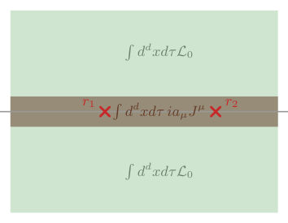
<figcaption class="paper-figure-caption"><b>Fig 1.</b> FIG. 1. Spacetime Path Integral of the Gutzwiller Projection (figure inspired by Ref. [33]). The green regions on top and bottom prepare ⟨ψ0| and |ψ0⟩respectively. Operator insertions along τ = 0 are denoted by a red x. We couple Jµ to a dynamical gauge field in the brown slab. The slab width ϵ is infinitesimal.</figcaption>
</figure>
</div>

<p><strong>Summary.</strong> This work develops a field-theoretic description of the Gutzwiller projection, treating it as a gauge field confined to a thin temporal slab. The authors demonstrate that this framework correctly captures the universal physics for gapped spin liquids but fails for gapless systems like Dirac spin liquids. This clarifies fundamental theoretical relationships between projection methods and emergent gauge theories in strongly correlated matter.</p>
<p><strong>Why it may be interesting.</strong> The rigorous field-theoretic treatment of the Gutzwiller projection provides a powerful, general tool for analyzing the low-energy effective theories of strongly correlated matter, which is central to modern condensed matter theory.</p>
<details>
<summary>Detailed structure</summary>
<p><strong>Main problem.</strong> The paper aims to clarify the precise relationship between the Gutzwiller projection and the parton gauge theory by providing a rigorous field-theoretic description of the projection.</p>
<p><strong>Main result.</strong> The Gutzwiller projection is shown to be a temporal defect, reproducing the correct universal physics only when the emergent gauge field is gapped (e.g., Laughlin states); it fails for gapless systems like U(1) Dirac spin liquids.</p>
<p><strong>Method.</strong> The authors use a path integral formulation, deriving an effective 'slab gauge theory' by treating the projection as a gauge field supported on a vanishingly thin temporal slab.</p>
<p><strong>Model / system.</strong> The study concerns strongly correlated electron systems, specifically analyzing the projected ground states of spin liquids and quantum Hall states using a parton decomposition approach.</p>
<p><strong>Key observables.</strong> The universal physics of projected states, gauge field propagators, and correlation functions distinguishing between gapped and gapless gauge regimes.</p>
<p><strong>Important parameters / regimes.</strong> The vanishing width of the temporal slab ($\epsilon 	o 0$), and the nature of the gauge field (gapped vs. gapless).</p>
<p><strong>Assumptions / limitations.</strong> The universal physics can be captured by describing the projection as a dynamical gauge field living only on a thin temporal slab.</p>
<p><strong>Figures summary.</strong> Figures illustrate the spacetime path integral of the Gutzwiller projection, emphasizing its nature as a temporal defect near $    au=0$.</p>
<p><strong>Paper structure.</strong> The paper develops the field theory by first establishing the path integral description of the projection, deriving the effective slab gauge action, and then applying this framework to analyze specific physical examples like Laughlin states and Dirac fermions.</p>
</details>
<details>
<summary>Abstract</summary>
<p>The Gutzwiller projection produces a well-known ansatz for spin-liquid and quantum Hall ground-state wavefunctions that is amenable to numerical simulation, with the Laughlin wavefunction being the most celebrated example. A long-standing issue is the precise relation between the Gutzwiller projection and the closely related parton gauge theory. Here, we clarify this issue by providing a field-theoretic description of the Gutzwiller projection. In a path integral description, the universal physics of the projected state is described in terms of a gauge field supported on a temporal slab of vanishing width $ε\rightarrow 0$ coupled to the bulk matter fields. We analytically derive the universal physics of various Gutzwiller projected states. Our construction is also applicable to discrete symmetries, and we use it to analyze various projected SPT states. Among our results, we show that the Gutzwiller projection is not a good ansatz for the long-distance properties of $U(1)$ Dirac spin liquids, spinon Fermi surface spin liquids or composite Fermi liquids, and that the Gutzwiller projection of a quantum spin Hall state has only quasi-long range order. In contrast, in examples where the gauge field is gapped, including Laughlin states, $\mathbb{Z}_2$ spin liquids and Luttinger liquids, we show that the slab gauge theory from Gutzwiller projection reproduces the correct universal physics of the full parton gauge theory. We also present a generalization of our field theory that describes $G$-intertwining defects, with application to self-duality defects of recent theoretical interest.</p>
</details>
<p><sub><a href="#top">↑ back to top</a></sub></p>

<p><a id="paper-2610.27556"></a></p>
<h3 id="hybrid-lattice-surgery-between-smooth-boundaries"><a href="http://arxiv.org/abs/2610.27556v1">Hybrid Lattice Surgery between Smooth Boundaries</a></h3>
<p><strong>Authors:</strong> Grace Ding, Yanzhu Chen, Sheng-Jie Huang<br>
<strong>Type:</strong> theory · <strong>Category:</strong> quantum information and computing · <strong>PDF:</strong> <a href="https://arxiv.org/pdf/2610.27556v1">https://arxiv.org/pdf/2610.27556v1</a><br>
<strong>Analysis basis:</strong> full PDF text, analyzed in chunks
<strong>Topic relevance:</strong> <code>quantum measurements</code> <strong>3/5</strong> · <code>methods for driven-dissipative</code> <strong>2/5</strong></p>
<div class="figure-strip-hint">↔ Scroll figures horizontally</div>
<div class="paper-figures-scroll">
<figure class="paper-figure-card">
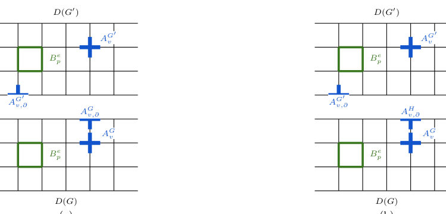
<figcaption class="paper-figure-caption"><b>Fig 1.</b> Figure 6. Bulk and interface projectors of the separated patches. (a) Before and (b) after smooth merge and split.</figcaption>
</figure>
<figure class="paper-figure-card">
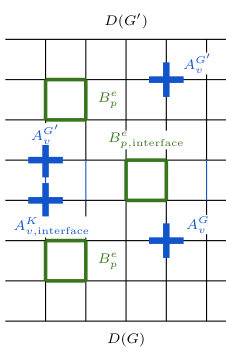
<figcaption class="paper-figure-caption"><b>Fig 2.</b> Figure 7. Bulk and interface projectors of the hybrid code patch after the smooth merge. The added edges are blue.</figcaption>
</figure>
<figure class="paper-figure-card">
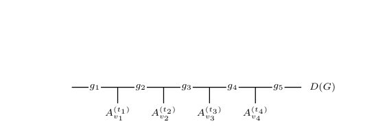
<figcaption class="paper-figure-caption"><b>Fig 3.</b> Figure 8. Illustrate the coset measurement and the correc- tion on the D(G) boundary. The correction operators are the boundary vertex terms A(ti) vi . The set of group elements {ti} that is used in the corrections is determined by the coset mea- surements.</figcaption>
</figure>
<figure class="paper-figure-card">
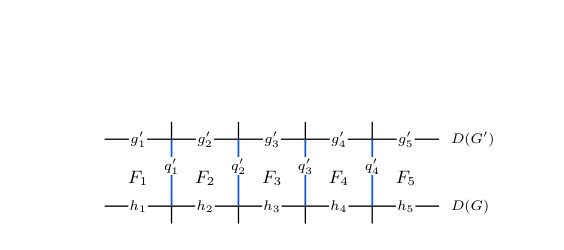
<figcaption class="paper-figure-caption"><b>Fig 4.</b> Figure 9. Five-plaquette interface for plaquette correction.</figcaption>
</figure>
</div>

<p><strong>Summary.</strong> This work develops a method called smooth hybrid lattice surgery to perform joint logical measurements across multiple quantum surface code patches built on finite groups. By defining precise merge and split operations, the authors show how to implement complex logical measurements, generalizing parity checks. This framework is crucial for building fault-tolerant quantum computation resources like magic states and controlled gates.</p>
<p><strong>Why it may be interesting.</strong> While focused on abstract quantum codes, the rigorous development of error correction and logical operations via lattice surgery provides powerful, generalizable tools for understanding fault-tolerant quantum computation architectures.</p>
<details>
<summary>Detailed structure</summary>
<p><strong>Main problem.</strong> The paper addresses the challenge of performing joint logical measurements across multiple, potentially different, quantum surface code patches joined by smooth boundaries.</p>
<p><strong>Main result.</strong> Smooth hybrid lattice surgery realizes a logical K-coset measurement, generalizing standard parity checks and enabling the implementation of complex logical gates and magic state preparation.</p>
<p><strong>Method.</strong> The authors utilize a combination of lattice surgery techniques (merging and splitting code patches) and tensor-network representations to derive explicit measurement circuits and correction protocols.</p>
<p><strong>Model / system.</strong> The model is based on group surface codes, which generalize the standard surface code to arbitrary finite groups G, defined by stabilizers derived from the quantum double D(G).</p>
<p><strong>Key observables.</strong> Logical K-coset measurement outcomes, controlled multiplication gate fidelity, and the ability to prepare specific magic states (T, CZ, CCX, CS).</p>
<p><strong>Important parameters / regimes.</strong> The interface subgroup K, the structure of the finite groups G and G', and the boundary type (smooth vs. rough).</p>
<p><strong>Assumptions / limitations.</strong> The initial derivations assume identity outcomes for boundary measurements, but the paper develops detailed parallel and sequential correction procedures to handle non-identity outcomes.</p>
<p><strong>Figures summary.</strong> Figures illustrate boundary conventions (smooth/rough), the structure of the hybrid code patch formed by merging two patches, and the general setup for logical operators.</p>
<p><strong>Paper structure.</strong> The paper first introduces the concept of smooth hybrid lattice surgery, then details the mathematical realization of the merge/split operation using stabilizers and projectors, followed by deriving the measurement circuits and implementing systematic parallel and sequential correction procedures using tensor networks.</p>
</details>
<details>
<summary>Abstract</summary>
<p>We develop smooth hybrid lattice surgery for group surface codes, enabling joint logical measurements through merge and split operations along smooth boundaries. The code patches may correspond to identical or different finite groups, including non-Abelian groups. Our central result is that smooth merge and split realize a logical $K$-coset measurement, where $K$ is the subgroup defining the interface. This generalizes the joint logical parity measurement of ordinary surface codes. Using a tensor-network representation, we derive explicit measurement circuits and develop procedures for correcting nonidentity measurement outcomes. We illustrate the framework through a generalized controlled multiplication gate between group surface codes and protocols for preparing the $T$, $CZ$, $CCX$, and $CS$ magic states, producing resources encoded in one or more $\mathbb{Z}_2$ surface code patches. Our results show how smooth hybrid lattice surgery broadens the range of logical operations available for group surface codes.</p>
</details>
<p><sub><a href="#top">↑ back to top</a></sub></p>

<p><a id="paper-2610.27349"></a></p>
<h3 id="nonlocality-effects-on-fermions-confined-within-a-hard-wall-potential"><a href="http://arxiv.org/abs/2610.27349v1">Nonlocality effects on fermions confined within a hard-wall potential</a></h3>
<p><strong>Authors:</strong> G. Q. Garcia, P. J. Porfírio, E. Brito, D. C. Moreira<br>
<strong>Type:</strong> theory · <strong>Category:</strong> quantum gases · <strong>PDF:</strong> <a href="https://arxiv.org/pdf/2610.27349v1">https://arxiv.org/pdf/2610.27349v1</a><br>
<strong>Analysis basis:</strong> full PDF text, analyzed in chunks
<strong>Topic relevance:</strong> <code>analog quantum simulation</code> <strong>3/5</strong> · <code>correlated / nonlocal dissipation</code> <strong>1/5</strong></p>
<div class="figure-strip-hint">↔ Scroll figures horizontally</div>
<div class="paper-figures-scroll">
<figure class="paper-figure-card">
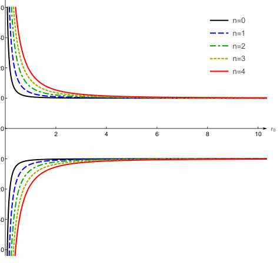
<figcaption class="paper-figure-caption"><b>Fig 1.</b> FIG. 1. Energy levels of fermions confined in the cylinder as aa functions of its radius, given by Eq. (5.4) for different values of n. Here, we use m = λ = 10−3, Λ = 104λ, κ = 0, j = 0 and σz = 1.</figcaption>
</figure>
<figure class="paper-figure-card">
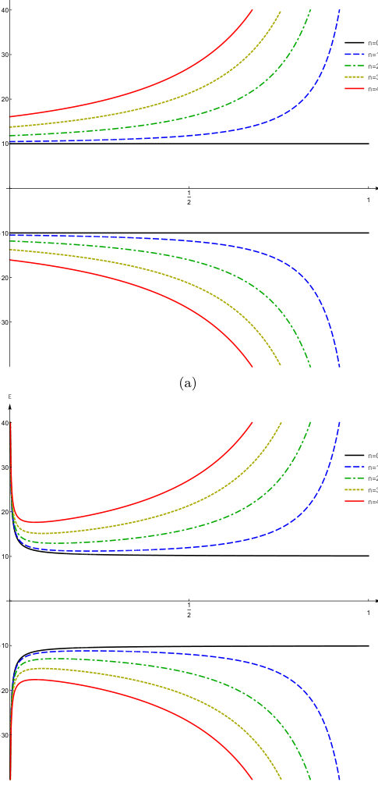
<figcaption class="paper-figure-caption"><b>Fig 2.</b> FIG. 2. Energy levels for fermions confined in a ring with inner and outer radii given by R1 and R2, respectively, given by Eq. (6.7) for different values of n. Here, we use m = λ = 10−3, Λ = 104λ, κ = 0, σz = 1 and fix R2 = 1. In (a) we consider setups with j = 0 and in (b) we consider scenarios with j = 2.</figcaption>
</figure>
</div>

<p><strong>Summary.</strong> This theoretical work analyzes the energy spectrum of confined fermions subjected to nonlocality effects modeled via a modified Dirac equation. The authors derive analytical solutions for cylindrical and quantum ring geometries, showing that nonlocality primarily shifts the effective mass term in the energy eigenvalues. This provides a quantitative characterization of how non-local physics modifies quantum confinement predictions.</p>
<p><strong>Why it may be interesting.</strong> While focused on fermions, the methodology of solving confinement problems in low-dimensional geometries (rings/cylinders) and incorporating non-local corrections via effective mass terms is highly relevant to modeling exotic quantum systems in AMO physics.</p>
<details>
<summary>Detailed structure</summary>
<p><strong>Main problem.</strong> The paper investigates how nonlocality modifies the energy spectrum of spin-1/2 fermions confined within a hard-wall potential.</p>
<p><strong>Main result.</strong> Nonlocal effects are shown to modify the mass contribution to the energy spectrum, leading to analytical spectra for cylindrical and quantum ring geometries, while recovering the local results in the limit of infinite nonlocality scale.</p>
<p><strong>Method.</strong> The authors derive a nonlocal Dirac equation, reduce it to a finite-order problem using the eigenvalue spectrum of the squared Dirac operator, and solve the resulting radial equations using Bessel functions.</p>
<p><strong>Model / system.</strong> The system consists of spin-1/2 fermions confined by hard-wall potentials in flat spacetime, analyzed in cylindrical coordinates for geometries like a cylindrical box or a quantum ring.</p>
<p><strong>Key observables.</strong> The energy spectrum ($E_{n,j}$), particularly the shift in the particle--antiparticle energy separation.</p>
<p><strong>Important parameters / regimes.</strong> The nonlocality parameter ($\Lambda$), the effective mass ($M_{	ext{eff}}$), and the confinement radii ($r_0, R_1, R_2$).</p>
<p><strong>Assumptions / limitations.</strong> The analysis assumes a flat spacetime background and focuses on the branch of the theory continuously connected to the local Dirac theory.</p>
<p><strong>Figures summary.</strong> Figures illustrate the energy levels for fermions in a cylinder and a ring as a function of confinement size, demonstrating the dependence on quantum numbers and nonlocality.</p>
<p><strong>Paper structure.</strong> The paper proceeds by formulating the nonlocal Dirac equation, simplifying it via the squared Dirac operator, determining the effective mass $M_{	ext{eff}}$, and finally solving the resulting radial equations for the specific geometries (cylinder and ring) using Bessel functions.</p>
</details>
<details>
<summary>Abstract</summary>
<p>We investigate nonlocality effects on the energy spectrum of spin-$1/2$ fermions confined by hard-wall potentials. Starting from a nonlocal Dirac theory with a modified kinetic term, we formulate the associated field equation in flat spacetime using cylindrical coordinates. By exploiting the eigenvalue spectrum of the squared Dirac operator, the original infinite-order equation is reduced to a finite-order problem. We also show that on the branch continuously connected to the local Dirac theory the nonlocal corrections can be encoded in an effective fermion mass. We then find analytical energy spectra for two confining geometries: a cylindrical hard wall and a quantum ring defined by two concentric cylindrical boundaries. In both cases, the radial equations reduce to Bessel equations and the boundary conditions quantize the allowed modes. The local hard-wall spectra are recovered for $Λ\to\infty$, whereas finite nonlocality shifts the mass contribution and, consequently, the particle--antiparticle energy separation. These results provide a direct characterization of nonlocal effects in quantum-confined fermionic systems.</p>
</details>
<p><sub><a href="#top">↑ back to top</a></sub></p>

<p><a id="paper-2610.28396"></a></p>
<h3 id="orbital-angular-momentum-control-of-localized-floquet-states-and-photocurrents-in-weyl-semimetals"><a href="http://arxiv.org/abs/2610.28396v1">Orbital-angular-momentum control of localized Floquet states and photocurrents in Weyl semimetals</a></h3>
<p><strong>Authors:</strong> Kyle S. Netherwood, Juan I. Aranzadi, Nils Jacobsen, Michael A. Sentef, Sang Soon Oh<br>
<strong>Type:</strong> theory · <strong>Category:</strong> other · <strong>PDF:</strong> <a href="https://arxiv.org/pdf/2610.28396v1">https://arxiv.org/pdf/2610.28396v1</a><br>
<strong>Analysis basis:</strong> full PDF text, analyzed in chunks
<strong>Topic relevance:</strong> <code>interference shaping light</code> <strong>3/5</strong> · <code>analog quantum simulation</code> <strong>1/5</strong></p>
<div class="figure-strip-hint">↔ Scroll figures horizontally</div>
<div class="paper-figures-scroll">
<figure class="paper-figure-card">
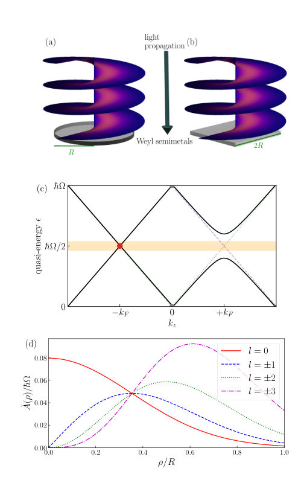
<figcaption class="paper-figure-caption"><b>Fig 1.</b> FIG. 1. (a-b) Schematics of vortex light beams incident on Weyl semimetals. The vortex beam is depicted as an isopha- sic contour with color showing the LG radial dependence in Eq.(7) with l = 1 and w = R/2. (a) Cylindrical semimetal as treated in Sec.III. (b) Cuboid semimetal as treated in Sec.IV. (c) Schematic of quasi-energy spectrum as a function of kz for a Weyl fermion of chirality χ driven by a homogeneous beam with circular polarization τ = χ. The red circle shows the Weyl node. The yellow shaded region indicates the quasi- energy domain plotted in Fig.2. Green dotted and purple dashed lines show the χ = −τ Weyl cone. (d) LG radial func- tions for different l values where w = R/2...</figcaption>
</figure>
<figure class="paper-figure-card">
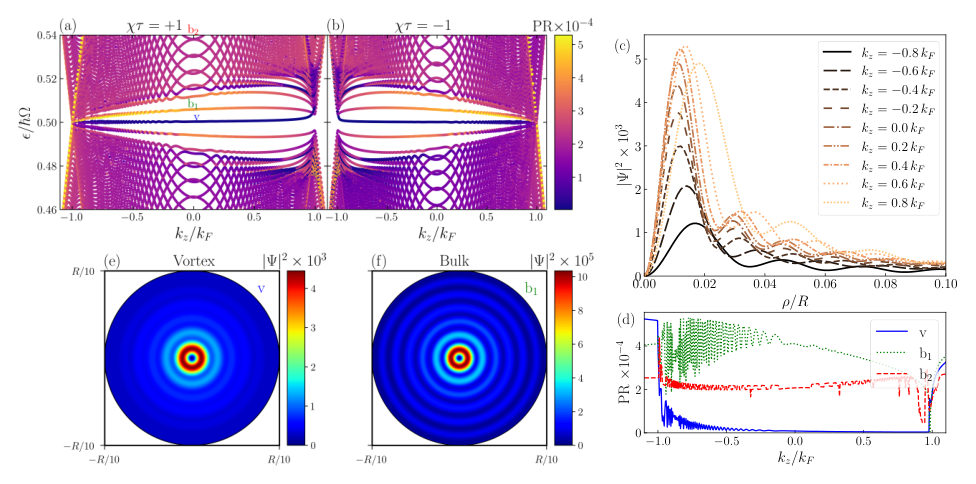
<figcaption class="paper-figure-caption"><b>Fig 2.</b> FIG. 2. (a-b) Quasi-energy spectra, calculated from the BdG Eq.(13), with le = 0, l = 1, τ = 1, and (a) χ = +1, (b) χ = −1. Color shows the PR from Eq.(17) where vortex states have smaller (darker) participation ratio (color). (c) χ = τ = 1 vortex state probability densities as a function of ρ for different kz values. (d) PR for each kz value for the χ = τ = 1 vortex state “v” (blue solid line), the closest |E| bulk state “b1” (green dotted line), and a further away bulk state “b2” (red dashed line). (e-f) Probability densities of the (e) vortex “v” and (f) closest |E| bulk state “b1” at kz = 0 from (a). Only the central tenth of the material is shown.</figcaption>
</figure>
<figure class="paper-figure-card">
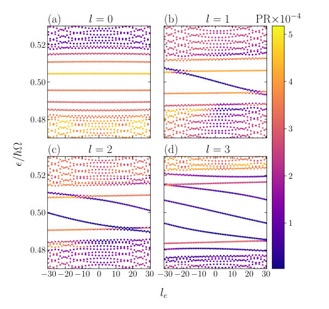
<figcaption class="paper-figure-caption"><b>Fig 3.</b> FIG. 3. Quasi-energy spectra, calculated from the BdG Eq.(13), with χ = τ = 1, kz = 0, and (a) l = 0, (b) l = 1, (c) l = 2, (d) l = 3. Color shows the PR from Eq.(17) where vortex states have smaller (darker) PR (color).</figcaption>
</figure>
<figure class="paper-figure-card">
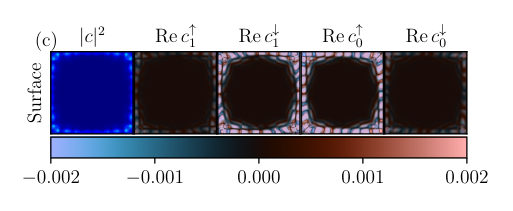
<figcaption class="paper-figure-caption"><b>Fig 4.</b> FIG. 4. (a) Schematic of vortex eigen-spinor element con- centric loops for different eigenvalues of Lgraph z . (b-c) Wilson model probability densities |c|2 and real parts of the corre- sponding eigen-spinor elements Re cs mΩwhere l = 1, χ = 1, and τ = 1. Lattice size is 355×355. (b) Vortex states and (c) a surface state. (b) Plots show only the central 10% of the lattice from −R/10 to R/10 in both directions. Left labels show the TAM eigenvalue j for each spinor and right labels show the electronic OAM le. (c) Plots show the entire lattice. Colorbar only shows values for the eigen-spinor elements not |c|2.</figcaption>
</figure>
<figure class="paper-figure-card">

<figcaption class="paper-figure-caption"><b>Fig 5.</b> FIG. 5. Current density from middle row my to next row my −1 as a function of x = amx calculated using Eq.(23) with χ = τ = 1 and vF = 1/2. x is made up of 355 discrete lattice sites. Current densities are multiplied by 104. (a) The l = 1, j = 1/2 vortex state (red dotted line), the l = 1, j = −5/2 vortex state (green dashed line), and an l = 1 surface state (blue solid line) from Fig.4. (b) The l = 2, j = −21 (magenta solid line), l = 3, j = 5/2 (cyan dash-dotted line), and l = 3, j = 1/2 (red dotted line) vortex states.</figcaption>
</figure>
</div>

<p><strong>Summary.</strong> This theoretical work demonstrates that the orbital angular momentum (OAM) of structured light can act as a precise knob to engineer localized electronic states in Weyl semimetals. By solving the system using both continuum and lattice models, the authors show that these OAM-induced vortex states carry significantly enhanced and tunable circulating photocurrents. This establishes a real-space framework for using structured light to control quantum currents in topological materials.</p>
<p><strong>Why it may be interesting.</strong> The direct coupling of light's OAM to electronic structure and current generation in topological materials like Weyl semimetals provides a powerful, optically tunable mechanism for controlling quantum transport.</p>
<details>
<summary>Detailed structure</summary>
<p><strong>Main problem.</strong> The paper investigates how controlling the orbital angular momentum (OAM) of structured light can be used to manipulate localized Floquet states and generate measurable photocurrents in Weyl semimetals.</p>
<p><strong>Main result.</strong> OAM is established as a tunable control parameter for creating highly localized, current-carrying vortex states in Weyl systems, with these states supporting stronger circulating currents than extended surface states.</p>
<p><strong>Method.</strong> The study employs two complementary theoretical frameworks: a continuum description using a Bogoliubov-de Gennes (BdG)-like radial equation exploiting cylindrical symmetry, and a discrete approach using a 2D square lattice tight-binding model.</p>
<p><strong>Model / system.</strong> The physical system is a Weyl semimetal, modeled by a time-dependent Hamiltonian driven by a vortex light beam. The analysis uses Floquet theory to transform the time-dependent problem into a static quasi-energy problem.</p>
<p><strong>Key observables.</strong> Photocurrents, participation ratio (PR) for localization, and the quasi-energy spectrum.</p>
<p><strong>Important parameters / regimes.</strong> Orbital angular momentum ($\ell$), light frequency ($\Omega$), and the chirality ($\chi$) of the Weyl nodes.</p>
<p><strong>Assumptions / limitations.</strong> The analysis relies on the paraxial approximation and assumes that the fermion energy is much less than the single photon energy in some derivations.</p>
<p><strong>Figures summary.</strong> Figures illustrate schematics of vortex light beams on Weyl semimetals, quasi-energy spectra versus $k_z$ for varying OAM, and probability density plots showing the localization of vortex states.</p>
<p><strong>Paper structure.</strong> The paper develops the Hamiltonian, first using a continuum approach leading to a BdG-like radial equation, and then complementing this with a lattice formulation using a Wilson mass to calculate current densities and analyze symmetry properties.</p>
</details>
<details>
<summary>Abstract</summary>
<p>Structured light provides a route to controlling quantum materials not only through its polarization, but also through its spatial profile and orbital angular momentum (OAM). We develop real space theories of a Weyl semimetal driven by a vortex beam and show that optical OAM generates highly localized Floquet vortex states with pronounced circulating photocurrents. Exploiting cylindrical symmetry, we derive a Bogoliubov-de Gennes-like radial equation that resolves the states by angular momentum and reveals their evolution between the light-dressed Weyl cones. For Laguerre-Gaussian beams, the spatially varying drive produces strong hybridization between localized vortex states and bulk states. We complement this continuum description with a Wilson-lattice formulation that retains the full two-dimensional spatial structure and enables direct calculation of local photocurrents. Both approaches consistently identify OAM-induced vortex states localized around the beam axis. The lattice calculation further shows that these states support substantially stronger circulating current densities than the more extended surface states, with the largest current densities associated with the most strongly localized, low-angular-momentum vortex modes. Our results establish optical OAM as a tunable control parameter for creating and manipulating localized current-carrying states in Weyl systems and provide a real-space framework for studying photocurrents generated by spatially structured light.</p>
</details>
<p><sub><a href="#top">↑ back to top</a></sub></p>

<p><a id="paper-2610.28144"></a></p>
<h3 id="polarization-signatures-of-mixed-scalar-pseudoscalar-alp-photon-couplings-in-intense-laser-pulses"><a href="http://arxiv.org/abs/2610.28144v1">Polarization signatures of mixed scalar - pseudoscalar ALP - photon couplings in intense laser pulses</a></h3>
<p><strong>Authors:</strong> Musajan Kadir, Hong-Hao Fan, Ying Wu, Qi-Rong Wang, Bai-Song Xie<br>
<strong>Type:</strong> theory · <strong>Category:</strong> other · <strong>PDF:</strong> <a href="https://arxiv.org/pdf/2610.28144v1">https://arxiv.org/pdf/2610.28144v1</a><br>
<strong>Analysis basis:</strong> full PDF text, analyzed in chunks
<strong>Topic relevance:</strong> <code>interference shaping light</code> <strong>3/5</strong> · <code>quantum measurements</code> <strong>1/5</strong></p>
<div class="figure-strip-hint">↔ Scroll figures horizontally</div>
<div class="paper-figures-scroll">
<figure class="paper-figure-card">

<figcaption class="paper-figure-caption"><b>Fig 1.</b> FIG. 1. Collision geometry and polarization convention. The strong-laser quantities (k0, E0, B0) are shown in gold, while the probe quantities (k, E, B) are shown in blue. The strong laser propagates along +y, with its electric field polarized along +z, while the probe wave vector lies in the x–y plane and forms the collision angle θ with the laser. The angle α specifies the probe polarization relative to the strong-laser electric-field direction.</figcaption>
</figure>
<figure class="paper-figure-card">

<figcaption class="paper-figure-caption"><b>Fig 2.</b> FIG. 3. Photon-to-ALP conversion probability Pγ→ϕ as a function of the probe polarization angle α and coupling angle θg for θ = 90◦, 120◦, 150◦, and 180◦. In each panel, mϕ = mres(θ), corresponding to ρ = 1. The white dotted and red dashed lines indicate the zero-conversion branch α = θg and the maximal-conversion branch α = θg + 90◦, respectively. The remaining parameters are given in Table I.</figcaption>
</figure>
<figure class="paper-figure-card">

<figcaption class="paper-figure-caption"><b>Fig 3.</b> FIG. 4. Photon-to-ALP conversion probability Pγ→ϕ in the (mϕ, θ) plane for the maximal-conversion choice θg = 45◦and α = 135◦. The red dashed curve denotes the carrier-frequency phase-matching condition ρ = 1. The inset enlarges the head- on endpoint region. The remaining parameters are listed in Table I.</figcaption>
</figure>
<figure class="paper-figure-card">

<figcaption class="paper-figure-caption"><b>Fig 4.</b> FIG. 5. Dichroic rotation for a head-on collision at mϕ = mres(180◦). (a) Signed rotation ∆α. The dashed branches at α −θg = 45◦modulo 90◦mark extrema of the rotation magnitude; adjacent branches alternate between negative and positive rotation. The dotted branches at α−θg = 0◦modulo 90◦indicate zero rotation. (b) Rotation magnitude |∆α|, for which the dashed branches mark the maxima and the dotted branches mark the zeros. The remaining parameters are listed in Table I.</figcaption>
</figure>
</div>

<p><strong>Summary.</strong> This theoretical study analyzes how mixed scalar and pseudoscalar couplings affect photon-to-ALP conversion in intense laser fields. The key finding is that the conversion probability and the resulting polarization rotation both exhibit a distinct, interference-driven dependence on the probe polarization angle. This provides a powerful, polarization-resolved signature for identifying the nature of the ALP coupling.</p>
<p><strong>Why it may be interesting.</strong> This work provides a detailed theoretical framework for using polarization-resolved measurements to distinguish between different types of fundamental couplings (scalar vs. pseudoscalar) in exotic particle searches, which is highly relevant to quantum optics and high-energy physics.</p>
<details>
<summary>Detailed structure</summary>
<p><strong>Main problem.</strong> The paper investigates the polarization signatures arising from the coherent interference of mixed scalar and pseudoscalar couplings between Axion-Like Particles (ALPs) and photons in intense laser pulses.</p>
<p><strong>Main result.</strong> The conversion probability exhibits a polarization dependence proportional to $\sin^2(\alpha - 	heta_g)$, and the induced polarization rotation is directly related to the derivative of this conversion probability ($\Delta\alpha \propto -\partial P / \partial \alpha$).</p>
<p><strong>Method.</strong> The analysis uses a coherent interference approach, decomposing the probe polarization into a bright-dark basis to derive the conversion probability and the resulting polarization rotation.</p>
<p><strong>Model / system.</strong> The system involves a single real ALP field coupled to photons via both scalar ($g_s$) and pseudoscalar ($g_p$) interactions, driven by a strong, linearly polarized, pulsed laser background.</p>
<p><strong>Key observables.</strong> Photon-to-ALP conversion probability ($P_{\gamma 	o \phi}$), polarization rotation ($\Delta\alpha$), and the dependence on the probe polarization angle $\alpha$ relative to the coupling angle $   heta_g$.</p>
<p><strong>Important parameters / regimes.</strong> The coupling ratio controlled by $  heta_g$, the collision angle $  heta$ (for kinematic scanning), and the weak-conversion regime ($P_b \ll 1$).</p>
<p><strong>Assumptions / limitations.</strong> The analysis neglects dispersive birefringence and treats the strong laser pulse as an external, classical field (no backreaction).</p>
<p><strong>Figures summary.</strong> Figures illustrate the collision geometry and polarization conventions; one figure shows the dichroic rotation ($\Delta\alpha$) dependence on the polarization angle $\alpha$ for a head-on collision.</p>
<p><strong>Paper structure.</strong> The paper builds from the fundamental interaction Lagrangian to derive the polarization-dependent conversion probability, then uses this probability to calculate the induced polarization rotation via differentiation, establishing a direct link between the two observables.</p>
</details>
<details>
<summary>Abstract</summary>
<p>We investigate photon-to-axion-like-particle (ALP) conversion in a finite, linearly polarized laser pulse for a single ALP field with simultaneous scalar-type and pseudoscalar-type couplings to photons. Varying the collision angle between the strong pulse and the probe provides a continuous kinematic scan of the resonant ALP mass. For fixed kinematics in this setting, the scalar-type and pseudoscalar-type ALP conversion amplitudes interfere coherently, making both the photon-to-ALP conversion probability and the polarization rotation depend on the difference between the probe polarization angle $α$ and the coupling angle $θ_g$. Conversion is maximal at $|α-θ_g|=90^\circ$, where the polarization rotation vanishes, while the rotation magnitude peaks at $α-θ_g=45^\circ$ modulo $90^\circ$, where conversion is half-maximal. These complementary polarization-angle dependences provide polarization-resolved signatures of mixed scalar--pseudoscalar photon couplings.</p>
</details>
<p><sub><a href="#top">↑ back to top</a></sub></p>

<p><a id="paper-2610.28621"></a></p>
<h3 id="characterizing-supersolid-phase-transitions-in-trapped-quantum-gases-with-tilted-dipoles-at-finite-temperature"><a href="http://arxiv.org/abs/2610.28621v1">Characterizing supersolid phase transitions in trapped quantum gases with tilted dipoles at finite temperature</a></h3>
<p><strong>Authors:</strong> Julian Kusch, Lauriane Chomaz, Wyatt Kirkby<br>
<strong>Type:</strong> theory · <strong>Category:</strong> quantum gases · <strong>PDF:</strong> <a href="https://arxiv.org/pdf/2610.28621v1">https://arxiv.org/pdf/2610.28621v1</a><br>
<strong>Analysis basis:</strong> full PDF text, analyzed in chunks
<strong>Topic relevance:</strong> <code>analog quantum simulation</code> <strong>3/5</strong></p>
<div class="figure-strip-hint">↔ Scroll figures horizontally</div>
<div class="paper-figures-scroll">
<figure class="paper-figure-card">

<figcaption class="paper-figure-caption"><b>Fig 1.</b> FIG. 1. System Geometry. Sketch of the dipolar quantum gas in a surfboard-shaped trap. The shaded areas show iso- surfaces of the density of a modulated ground state obtained from the TeGPE. The harmonic trap axes are aligned along the x, y, z coordinate axes. The polarization axis is given by the tilt α of the magnetic field in the x −z plane relative to the tightest confinement axis z.</figcaption>
</figure>
<figure class="paper-figure-card">

<figcaption class="paper-figure-caption"><b>Fig 2.</b> FIG. 2. Thermal fluctuations. Effective thermal potential as a function of the local 3D density n = |Ψ|2. For the two temperatures T = 60 and 100 nK, solid lines show Eq. (7) for a range of ϵdd (see colorbar) within the stable region. We also show our approximate model [Eq. (10)] with best-fit parame- ters A and B in the same colors as the dotted lines. The exact integral and model lie nearly on top of one another, with a slight underestimation at very high densities, highlighted in the inset. The contact interaction g|Ψ|2 (CI, red dashed) and quantum fluctuation γQ|Ψ|3 (QF, blue dot-dashed) are plot- ted for comparison at ϵdd = 1. The maximum 3D density encountered across the states we...</figcaption>
</figure>
<figure class="paper-figure-card">

<figcaption class="paper-figure-caption"><b>Fig 3.</b> FIG. 3. Exemplary phase diagram. Phase diagram of a 164Dy gas in a surfboard-shaped trap for the reference parameters N = 2 × 105, T = 60 nK and νz = 150 Hz and varying dipole tilt α and scattering length as. The in- sets show exemplary density distributions (cut at z = 0) of the ground states at the parameters of the correspond- ing symbols. Unmodulated, triangular, and stripe phases (shaded regions) are identified based on the structure of the density profile; see App. D. Arrows indicate directions of transition crossings used in Sec. III A and III B: ingo- ing/outgoing for the unmodulated-to-modulated transition and upward/downward for the triangular-to-stripe transition.</figcaption>
</figure>
<figure class="paper-figure-card">

<figcaption class="paper-figure-caption"><b>Fig 4.</b> FIG. 4. Density contrast curves and hysteresis anal- ysis. Density contrast of the simulated states as a function of as for the reference parameters N = 2 × 105, T = 60 nK and νz = 150 Hz. (a) Density contrast for three different tilt angles α = 0◦(blue), 30◦(violet), and 60◦(orange) with a spacing of δas ≈0.12a0. Panel (b) shows the contrast curves for the ingoing (circle) and outgoing (square) directions for α = 0◦, 30◦and 60◦(from left to right), as well as the corre- sponding fits (solid and dashed lines, respectively) to Eq. (11) in the region of 1a0 below the transition for both directions.</figcaption>
</figure>
<figure class="paper-figure-card">

<figcaption class="paper-figure-caption"><b>Fig 5.</b> FIG. 5. Hysteresis and phase boundaries of the unmodulated-to-modulated transition. Each panel shows the bistability range ∆ac = aout c −ain c (symbol) and, in the inset, the critical scattering lengths for the ingoing, ain c (solid), and outgoing, aout c (dashed), directions. The er- ror bars for ∆ac correspond to the resolution in as, given by δas ≈0.12a0. Panel (a) shows various temperatures T ∈{0, 60, 100} nK, (b) particle numbers N ∈{1, 2, 4} × 105, and (c) vertical trapping frequencies νz ∈{100, 150, 200} Hz. If not varied, T = 60 nK, N = 2 × 105, and νz = 150 Hz are the reference parameters, always represented by the magenta curves. Open circles correspond to triangular states,...</figcaption>
</figure>
</div>

<p><strong>Summary.</strong> This theoretical study characterizes the phase transitions within trapped dipolar quantum gases by simulating the system using an extended Gross-Pitaevskii equation. The authors use imaginary-time hysteresis analysis to map out how the transition order—whether continuous or discontinuous—can be tuned by adjusting the dipole tilt angle and interaction strengths. The findings provide crucial guidance for future experimental measurements in dipolar quantum gases.</p>
<p><strong>Why it may be interesting.</strong> This work directly addresses the complex interplay between dipolar interactions, thermal fluctuations, and quantum correlations in ultracold atomic systems, providing quantitative predictions for experimentally observable phase transitions.</p>
<details>
<summary>Detailed structure</summary>
<p><strong>Main problem.</strong> The paper investigates the nature and tunability of phase transitions (e.g., unmodulated-to-modulated, triangular-to-stripe) in trapped dipolar quantum gases at finite temperature.</p>
<p><strong>Main result.</strong> The transition order is found to be tunable by parameters like dipole tilt angle and contact interaction strength, exhibiting transitions between continuous and discontinuous regimes.</p>
<p><strong>Method.</strong> The study employs extended Gross-Pitaevskii simulations incorporating both thermal and quantum fluctuation effects, using imaginary-time hysteresis analysis to determine transition order.</p>
<p><strong>Model / system.</strong> The system is a trapped dipolar quantum gas, modeled using an extended Gross-Pitaevskii equation that includes terms for harmonic trapping, contact interactions, dipolar interactions, and both thermal and quantum fluctuations.</p>
<p><strong>Key observables.</strong> Phase diagram mapping (unmodulated, triangular, stripe states), transition order (discontinuous vs. continuous), and density modulation contrast.</p>
<p><strong>Important parameters / regimes.</strong> Dipole tilt angle ($\alpha$), contact interaction strength ($a_s$), temperature ($T$), particle number ($N$), and the relative dipolar interaction strength ($\epsilon_{	ext{dd}}$).</p>
<p><strong>Assumptions / limitations.</strong> The treatment of quantum fluctuations relies on a local-density approximation, and the thermal fluctuation term uses an ansatz approximation rather than a momentum cutoff.</p>
<p><strong>Figures summary.</strong> Figures illustrate the system geometry in a surfboard-shaped trap, show the thermal fluctuation energy dependence on density, and display density contrast curves used for hysteresis analysis across different dipole tilt angles.</p>
<p><strong>Paper structure.</strong> The paper first establishes the theoretical framework using the extended GPE, then maps the phase diagram by analyzing the transition order using hysteresis analysis, and finally discusses the structural classification of the resulting supersolid phases (triangular vs. stripe) using momentum-space diagnostics.</p>
</details>
<details>
<summary>Abstract</summary>
<p>Motivated by a recent experimental work arXiv:2608.20327, we theoretically investigate the nature of phase transitions in a trapped dipolar quantum gas upon tuning the contact interaction strength and dipole orientation. Using extended Gross-Pitaevskii simulations including thermal and quantum effects, we map the phase diagram comprising unmodulated superfluids, triangular droplet arrays, and stripe states. We further characterize the order of the transitions separating them through imaginary-time hysteresis analysis. The unmodulated-to-modulated transition evolves from discontinuous to continuous with increasing dipole tilt before becoming discontinuous again at large tilts. The degree of continuity is further affected by particle number, temperature, and confinement. While continuous behavior generally correlates with the emergence of stripe states, this correspondence is not systematic, and finite-size effects also influence the continuity of the transition. The triangular-to-stripe transition is found to be discontinuous at small contact interaction strengths and becomes increasingly continuous upon approaching the unmodulated-to-modulated phase boundary. Our results reveal a tunable transition order in finite dipolar quantum gases and provide guidance for its experimental investigation.</p>
</details>
<p><sub><a href="#top">↑ back to top</a></sub></p>

<p><a id="paper-2610.28041"></a></p>
<h3 id="contrasting-crystal-field-and-dipolar-anisotropies-in-the-triangular-antiferromagnet-nabaerbomath413mathmath414math"><a href="http://arxiv.org/abs/2610.28041v1">Contrasting Crystal-Field and Dipolar Anisotropies in the Triangular Antiferromagnet NaBaEr(BO$_3$)$_2$</a></h3>
<p><strong>Authors:</strong> Cheng Su, Yonglin Wang, Zihang Gao, Xinyang Liu, Jianglong Zhang, Chin-Wei Wang, Michael Marek Koza, Juping Xu, Wen Yin, Hao Deng, Wei Li, Junsen Xiang, Wentao Jin<br>
<strong>Type:</strong> experiment · <strong>Category:</strong> strongly correlated electrons · <strong>PDF:</strong> <a href="https://arxiv.org/pdf/2610.28041v1">https://arxiv.org/pdf/2610.28041v1</a><br>
<strong>Analysis basis:</strong> full PDF text, analyzed in chunks
<strong>Topic relevance:</strong> <code>analog quantum simulation</code> <strong>3/5</strong></p>
<div class="figure-strip-hint">↔ Scroll figures horizontally</div>
<div class="paper-figures-scroll">
<figure class="paper-figure-card">

<figcaption class="paper-figure-caption"><b>Fig 1.</b> FIG. 1. (a) Rietveld refinements of the room-temperature NPD data collected with detector banks located around 2θ = 156◦</figcaption>
</figure>
<figure class="paper-figure-card">

<figcaption class="paper-figure-caption"><b>Fig 2.</b> FIG. 3. (a,b) Dynamical structure factor S(Q, ω) measured at 1.5 K with incident energies Ei = 30 meV (a) and 110 meV (b). (c) Q dependence of the integrated intensities of selected excitations. The solid gray line shows the squared Er3+ magnetic form factor. (d,e) Integrated INS spectra measured with Ei = 30 meV (d) and 110 meV (e) over Q ranges of 1.5–2.5 and 2.7–3.7 ˚A −1, respectively. The solid lines represent the CEF fits. Spectra at different temperatures are offset vertically for clarity. (f,g) Comparison of the measured magnetic moment as functions of field (f) and temperature (g) with the corresponding CEF fits.</figcaption>
</figure>
<figure class="paper-figure-card">

<figcaption class="paper-figure-caption"><b>Fig 3.</b> FIG. 4. (a) Neutron diffraction intensity scanned along the (0, 0, L) and (1, 1, L) directions. The (1, 1, L) data are vertically offset for clarity. (b) Temperature dependence of the integrated intensity of the (0, 0, 4.5) magnetic reflection. (c) Comparison of the calculated and experimentally observed magnetic structure factors. (d) In-plane-field dependence of the integrated intensities of the (0, 0, 4.5) and (0, 0, 9) reflections. (e) Minimal Model (Model 2) magnetic structure consistent with the measured (0, 0, L) intensities. The in-plane moment direction and the precise c-axis component cannot be determined.</figcaption>
</figure>
<figure class="paper-figure-card">

<figcaption class="paper-figure-caption"><b>Fig 4.</b> FIG. 5. (a) Convergence of the calculated Kαβ with increas- ing lattice size. The diagonal elements converge to finite values, while the off-diagonal terms converge to zero. (b) Angular dependence of the calculated dipolar energy (Edip) for different g-factor anisotropies, including gab = 5.5 and gc = 8.5 inferred from the magnetization, the fully easy-plane case (gc = 0), and the isotropic case (gab = gc = 2). Here, θ denotes the angle between the spin direction and the c axis.</figcaption>
</figure>
</div>

<p><strong>Summary.</strong> This work comprehensively studies the magnetic anisotropy in NaBaEr(BO3)2, a triangular antiferromagnet. By combining neutron scattering and magnetization data, the authors establish that while the local crystal field favors an easy-axis moment along the c-axis, the long-range dipolar interactions force the actual ordered moment into the ab-plane. This highlights the critical role of dipolar coupling in determining the true magnetic ground state.</p>
<p><strong>Why it may be interesting.</strong> The competition between local crystal field effects and long-range dipolar interactions is a canonical problem in magnetism, providing a concrete example of how symmetry and long-range forces dictate macroscopic magnetic order, relevant to understanding frustrated quantum magnets.</p>
<details>
<summary>Detailed structure</summary>
<p><strong>Main problem.</strong> The paper investigates the complex interplay between crystal-field anisotropy, exchange interactions, and long-range dipolar interactions in determining the magnetic ground state of the triangular antiferromagnet NaBaEr(BO3)2.</p>
<p><strong>Main result.</strong> The study reveals a contrast where the local crystal-field environment favors an easy-axis anisotropy along the c-axis, but the long-range dipolar interactions dictate that the ordered magnetic moment lies predominantly within the ab-plane.</p>
<p><strong>Method.</strong> The research combines multiple experimental techniques, including neutron scattering (powder and single-crystal), magnetization measurements, and specific heat measurements, supplemented by classical dipolar energy calculations.</p>
<p><strong>Model / system.</strong> The system is the rare-earth triangular-lattice antiferromagnet NaBaEr(BO3)2, where the magnetic properties are governed by the $   ext{Er}^{3+}$ ions. The analysis models the competition between the local crystal-field energy and the long-range dipolar coupling energy.</p>
<p><strong>Key observables.</strong> A-type antiferromagnetic order below $T_N=0.1$ K; pronounced easy-axis anisotropy (4 meV separation); in-plane orientation of the ordered moment; and the structural space group $ar{R}3$.</p>
<p><strong>Important parameters / regimes.</strong> The dipolar interaction scale is comparable to the Néel temperature ($T_N$), suggesting dipolar forces are crucial in setting the magnetic ground state.</p>
<p><strong>Assumptions / limitations.</strong> The analysis assumes that the dipolar interactions can be calculated using classical energy minimization techniques based on the observed magnetic structure.</p>
<p><strong>Figures summary.</strong> Figures show structural refinements supporting the $ar{R}3$ space group, magnetic susceptibility confirming easy-axis behavior, and calculations demonstrating that the dipolar energy is minimized when the moment lies in the ab-plane.</p>
<p><strong>Paper structure.</strong> The paper progresses from structural determination (NPD) to characterizing local anisotropy (INS/Magnetization) and finally uses theoretical modeling (dipolar energy calculation) to explain the observed discrepancy between local and long-range magnetic anisotropies.</p>
</details>
<details>
<summary>Abstract</summary>
<p>The magnetic ground states of rare-earth frustrated magnets can be governed by competing energy scales arising from crystal-field anisotropy, exchange interactions, and long-range dipolar interactions. Here we investigate this interplay in the triangular-lattice antiferromagnet NaBaEr(BO$_3$)$_2$ by combining magnetization, specific heat, and neutron scattering measurements. Neutron powder diffraction resolves rotations of the ErO$_6$ octahedra and supports the lower-symmetry $R\bar{3}$ structure over the previously proposed $R\bar{3}m$ model. Magnetization measurements and inelastic neutron scattering establish an effective spin-1/2 description of its low-temperature magnetism with pronounced easy-axis anisotropy, arising from a well-isolated Kramers ground-state doublet separated from the first excited crystal-electric-field level by approximately 4 meV. Below $T_{\rm N}=0.1$ K, single-crystal neutron diffraction reveals A-type antiferromagnetic order with the ordered moment predominantly oriented within the $ab$ plane, despite the pronounced paramagnetic easy-axis anisotropy. The estimated dipolar interaction scale is comparable to $T_{\rm N}$, and classical dipolar-energy calculations for the observed stacking pattern favor an in-plane moment orientation. These results reveal contrasting crystal-field and dipolar anisotropies in determining the magnetic ground state of NaBaEr(BO$_3$)$_2$.</p>
</details>
<p><sub><a href="#top">↑ back to top</a></sub></p>

<p><a id="paper-2610.27834"></a></p>
<h3 id="controlled-z-gates-via-floquet-coupling-to-two-auxiliary-states-in-transmon-circuits"><a href="http://arxiv.org/abs/2610.27834v1">Controlled-Z Gates via Floquet Coupling to Two Auxiliary States in Transmon Circuits</a></h3>
<p><strong>Authors:</strong> Yutao Chen, Jia-Chi Zhang, Tian-Ming Li, Yu Liu, Kai Xu, Heng Fan<br>
<strong>Type:</strong> theory · <strong>Category:</strong> quantum information and computing · <strong>PDF:</strong> <a href="https://arxiv.org/pdf/2610.27834v1">https://arxiv.org/pdf/2610.27834v1</a><br>
<strong>Analysis basis:</strong> full PDF text, analyzed in chunks
<strong>Topic relevance:</strong> <code>QC/QI experiment</code> <strong>3/5</strong></p>
<div class="figure-strip-hint">↔ Scroll figures horizontally</div>
<div class="paper-figures-scroll">
<figure class="paper-figure-card">

<figcaption class="paper-figure-caption"><b>Fig 1.</b> FIG. 1. Circuit architecture and longitudinal control for two- auxiliary-state CZ gates. (a) Two transmons coupled directly and through a tunable coupler. (b) Floquet resonance mech- anism. At ∆= (α2 −α1)/2, the two bare auxiliary energies coincide relative to |11⟩. In the Floquet frame, a common shift +µ brings their first-sideband replicas (dashed lines) into res- onance with |11⟩when µ = −(α1 + α2)/2. (c) Effective auxil- iary transitions with matrix elements ± √</figcaption>
</figure>
<figure class="paper-figure-card">

<figcaption class="paper-figure-caption"><b>Fig 2.</b> FIG. 2. Nonadiabatic bright-state CZ gate in the full circuit model. (a) Frequency waveforms of qubits Q1, Q2, and coupler C. (b) Bloch-sphere trajectory illustrating the bright-state population-transfer-and-return cycle. (c) Dressed-state populations showing transfer from |f 11⟩to both auxiliary states and subsequent return. (d) Leakage and swap errors, quantified by the return losses 1 −P11 and 1 −Pij (ij = 10, 01), respectively. (e) Conditional-phase evolution toward π modulo 2π. The 72 ns gate achieves an average fidelity exceeding 99.99%.</figcaption>
</figure>
<figure class="paper-figure-card">

<figcaption class="paper-figure-caption"><b>Fig 3.</b> FIG. 3. Bloch-sphere trajectories and robustness of conventional and unconventional geometric π gates. (a,c) Trajectories in {|11⟩, |02⟩}; (b,d) trajectories in {|11⟩, |B⟩}, where |B⟩= (|20⟩−|02⟩)/ √</figcaption>
</figure>
<figure class="paper-figure-card">

<figcaption class="paper-figure-caption"><b>Fig 4.</b> FIG. 4. Adiabatic dark-state CZ gate in the full circuit model. (a) Frequency waveforms of qubits Q1, Q2, and coupler C. (b) Populations projected onto the fixed idle-dressed states during evolution from |f 11⟩. (c) Logarithmic return losses, 1 −P11, 1−P10, and 1−P01, for the corresponding logical inputs. (d) conditional phase Φcond/π; the dashed line marks the CZ target at −1, and the circle marks the final phase. The total pulse duration is 277 ns, and the average gate fidelity is exceeding 99.99%.</figcaption>
</figure>
<figure class="paper-figure-card">

<figcaption class="paper-figure-caption"><b>Fig 5.</b> FIG. 5. Spectator effects on bright- and dark-state CZ gates. (a) Simulated circuit with active qubits Q1, Q2, spectator qubits S1, S2, and couplers C1–C4. The active coupling path through C1 is highlighted in pink. (b) Nonadiabatic bright-state CZ gate with T = 72 ns. (c) Adiabatic dark-state CZ gate with total duration T = 277 ns. Bars show the gate infidelity 1 −F. Lines show the leakage error, averaged over the four active logical inputs. The horizontal labels denote spectator logical states. Blue and pink colors correspond to spectator-frequency pairs (3.0, 3.0) GHz and (3.8, 3.9) GHz, respectively.</figcaption>
</figure>
</div>

<p><strong>Summary.</strong> This paper details methods to implement high-fidelity Controlled-Z gates in transmon quantum circuits by exploiting coupling to two non-computational auxiliary states. The authors propose two distinct protocols—a nonadiabatic bright-state path and an adiabatic dark-state path—both achieving fidelities exceeding 99.99%. The work demonstrates that careful control over modulation phases can enhance gate robustness against common experimental imperfections.</p>
<p><strong>Why it may be interesting.</strong> This work provides concrete, tunable Hamiltonian engineering schemes for implementing fundamental quantum gates, which is highly relevant for experimental quantum computing architectures.</p>
<details>
<summary>Detailed structure</summary>
<p><strong>Main problem.</strong> The paper addresses the challenge of realizing high-fidelity Controlled-Z (CZ) gates in transmon circuits.</p>
<p><strong>Main result.</strong> Two protocols—nonadiabatic bright-state evolution and adiabatic dark-state evolution—were developed, both achieving average gate fidelities above 99.99% in simulations.</p>
<p><strong>Method.</strong> The authors employ Floquet engineering and adiabatic passage techniques to selectively couple to auxiliary states, enabling gate operation while suppressing unwanted interactions.</p>
<p><strong>Model / system.</strong> The system is based on transmon circuits (two qubits) whose interactions are engineered using longitudinal modulation of qubit frequencies. The analysis utilizes effective Hamiltonians derived in the dispersive regime, focusing on the coupling between computational and auxiliary states.</p>
<p><strong>Key observables.</strong> Gate fidelity ($ar{F}$), leakage error ($\epsilon_{	ext{leak}}$), and residual dark-state population ($P_D(T)$).</p>
<p><strong>Important parameters / regimes.</strong> Modulation amplitude ($A$), modulation frequency ($\mu$), and the ratio $\epsilon = A/\mu$.</p>
<p><strong>Assumptions / limitations.</strong> The analysis relies on the dispersive regime approximation and the ability to precisely tune external fluxes to achieve specific resonance conditions.</p>
<p><strong>Figures summary.</strong> Figures illustrate the circuit architecture, the Floquet resonance mechanism activating auxiliary transitions, and the pulse sequences for both bright-state and unconventional geometric CZ gates.</p>
<p><strong>Paper structure.</strong> The paper progresses from deriving the effective Hamiltonian using Floquet theory (via Bessel functions) to developing two distinct gate protocols: the nonadiabatic bright-state cycle and the adiabatic dark-state evolution. It concludes by comparing these methods, highlighting the robustness of unconventional geometric control.</p>
</details>
<details>
<summary>Abstract</summary>
<p>High-fidelity entangling gates are essential for quantum information processing. In transmon circuits, higher excited states provide additional pathways for engineering interactions within the computational subspace. Here we demonstrate controlled-Z (CZ) gates that exploit two noncomputational states, $\ket{02}$ and $\ket{20}$, through selective Floquet coupling. The nontrivial parametric modulation can activate both auxiliary transitions from $\ket{11}$ while suppressing the leading exchange between $\ket{01}$ and $\ket{10}$. Based on this approach, we develop two gate protocols: a nonadiabatic round trip through a bright auxiliary superposition and adiabatic evolution along a zero-energy dark state, both achieving average gate fidelities above $99.99\%$ in numerical simulations. Control of the modulation phase further extends the bright-state protocol to conventional and unconventional geometric CZ gates. Effective-model simulations show that unconventional control improves tolerance to residual $ZZ$ coupling and static qubit-frequency offsets relative to conventional control over the parameter ranges examined. Simulations including neighboring spectator qubits show that the original nonadiabatic bright-state and adiabatic dark-state CZ protocols retain high gate fidelities. This framework offers new routes toward the experimental realization of CZ gates and their geometric implementations.</p>
</details>
<p><sub><a href="#top">↑ back to top</a></sub></p>

<p><a id="paper-2610.27823"></a></p>
<h3 id="luther-emery-liquid-in-one-dimensional-attractive-fermi-gas"><a href="http://arxiv.org/abs/2610.27823v1">Luther-Emery liquid in one-dimensional attractive Fermi gas</a></h3>
<p><strong>Authors:</strong> Hai-Ying Cui, Yi-Cong Yu, Aashish Kafle, Han Pu, Randall G. Hulet, Thierry Giamarchi, Xî-Wen Guan<br>
<strong>Type:</strong> both · <strong>Category:</strong> strongly correlated electrons · <strong>PDF:</strong> <a href="https://arxiv.org/pdf/2610.27823v1">https://arxiv.org/pdf/2610.27823v1</a><br>
<strong>Analysis basis:</strong> full PDF text, analyzed in chunks
<strong>Topic relevance:</strong> <code>analog quantum simulation</code> <strong>3/5</strong></p>
<div class="figure-strip-hint">↔ Scroll figures horizontally</div>
<div class="paper-figures-scroll">
<figure class="paper-figure-card">

<figcaption class="paper-figure-caption"><b>Fig 1.</b> FIG. 1. (a) Schematic illustration of spin and charge exci- tations in the fully paired phase. The blue and pink curves denote the dressed energies of paired and unpaired fermions, respectively. The gray oval represents a bound state formed by two antiparallel-spin fermions and the arrows indicate their spin orientations; the bule spheres represent the paired fermions within the Fermi point. Charge excitations corre- spond to particle-hole processes that shift bound states out- ward from the Fermi points without breaking the pairs (green spheres). In contrast, spin excitations break a bound state and flip the spin orientation (pink spheres). (b) Exact low energy excitation spectra in charge...</figcaption>
</figure>
<figure class="paper-figure-card">

<figcaption class="paper-figure-caption"><b>Fig 2.</b> FIG. 2. The green solid line shows the gapped spin DSF, which is determined by the Eq.(22) with the parameter in dimensionless unit q = 0.3, vs = 1, and ∆= 0.9. The red dashed line shows the threshold of the excitation determined by the Eq.(24).</figcaption>
</figure>
<figure class="paper-figure-card">

<figcaption class="paper-figure-caption"><b>Fig 3.</b> FIG. 3. Bragg spectra and density profiles of a 1D two- component attractive Fermi gas in a harmonic tube. The trap parameters are adopted from Ref [29, 45], i.e., the transverse and axial confinement frequencies are ω⊥/2π ≃227.5kHz and ωx/2π = 1.34kHz, respectively. At the low energy level, we set the temperature T = 0, the total particle number N = 60; and the length of the tube L = 20µm. The 3D scattering length as = 400a0, which is related to the interaction strength via c = −2ℏ2/ma1D, with a1D = (−a2 ⊥/2as) [1 −1.4603(as/a⊥)] and a⊥= p</figcaption>
</figure>
</div>

<p><strong>Summary.</strong> This paper analyzes the Luther-Emery liquid phase in 1D attractive Fermi gases by solving the Yang-Gaudin model. It establishes that the LEL is marked by a fundamental dichotomy: gapless charge excitations and gapped spin excitations. This signature is predicted to be observable as a distinct, measurable spectral splitting using Bragg spectroscopy in trapped atomic gases.</p>
<p><strong>Why it may be interesting.</strong> This work bridges fundamental condensed matter theory (LEL physics) with modern experimental platforms (ultracold atoms), providing a concrete, measurable spectroscopic fingerprint for a complex quantum state.</p>
<details>
<summary>Detailed structure</summary>
<p><strong>Main problem.</strong> The primary goal is to theoretically predict and experimentally identify the Luther-Emery liquid (LEL) phase in a one-dimensional attractive Fermi gas, a state that has been predicted but remains experimentally elusive.</p>
<p><strong>Main result.</strong> The LEL is characterized by a distinct spectroscopic signature: gapless charge excitations coexisting with gapped spin excitations, which can be unambiguously detected via spin Bragg spectroscopy in trapped gases.</p>
<p><strong>Method.</strong> The authors combine exact solutions (Bethe ansatz) for the model Hamiltonian with bosonization techniques and the Local Density Approximation (LDA) to analyze both homogeneous and trapped systems.</p>
<p><strong>Model / system.</strong> The system is a one-dimensional (1D) attractive Fermi gas, modeled using the Yang-Gaudin Hamiltonian. The analysis focuses on the fully paired phase, contrasting the gapless charge sector with the gapped spin sector.</p>
<p><strong>Key observables.</strong> Dynamical Structure Factors (DSF) for both spin and charge channels, and the frequency splitting between the spin Bragg peak and the charge-mode peak.</p>
<p><strong>Important parameters / regimes.</strong> Interaction strength, spin polarization ($p$), and the low-momentum behavior of the excitation spectra ($\omega_c \propto |q|$ vs. $\omega_s \ge \omega_{th}$).</p>
<p><strong>Assumptions / limitations.</strong> The analysis relies on the LDA for trapped systems and assumes the system can be mapped to a free fermion model at specific points (e.g., $K_s = 1/2$).</p>
<p><strong>Figures summary.</strong> Figures illustrate the schematic comparison of gapless charge vs. gapped spin excitations, and show the normalized spin DSF exhibiting a clear vanishing weight below a threshold frequency ($\omega_{th}$).</p>
<p><strong>Paper structure.</strong> The paper progresses from establishing the theoretical framework using the Bethe ansatz and bosonization to deriving the distinct gapless/gapped excitation spectra, culminating in applying these results to predict measurable spectral splitting in trapped gas Bragg spectroscopy.</p>
</details>
<details>
<summary>Abstract</summary>
<p>One-dimensional (1D) interacting Fermi gases underpin a rich variety of quantum liquids, ranging from the Tomonaga-Luttinger liquid and the Fulde-Ferrell-Larkin-Ovchinnikov paired state to the Luther-Emery liquid (LEL). Notably, the LEL-characterized by gapless excitations in charge or spin degree of freedom and gapped excitations in the other-has long been theoretically predicted but has eluded definitive experimental observation to date. By exactly solving the attractive Yang-Gaudin model via the Bethe ansatz, we fully determine the low-energy excitation spectra for both spin and charge channels. For fully paired fermions, the spectrum features gapped spin excitation coexisting with gapless charge excitation. We further employ bosonization to derive analytical expressions for the dynamical structure factor (DSF) of the gapped spin excitation, which is a long-standing challenge in this study. In the trapped gas, we find that the spin Bragg spectroscopy peak occurs at a much higher frequency than the charge-mode peak, where the splitting frequency between these two peaks scales approximately linearly with the interaction strength. Crucially, the spin gap manifests as a sharp threshold in the spin DSF, below which spectral weight is completely absent, proving a direct and unambiguous spectroscopic fingerprint of the LEL. Our work establishes quasi-1D trapped attractive Fermi gases as a pristine experimental platform for the long-sought direct observation of the LEL.</p>
</details>
<p><sub><a href="#top">↑ back to top</a></sub></p>

<p><a id="paper-2610.28070"></a></p>
<h3 id="measurement-incompatibility-in-bayesian-quantum-estimation-beyond-quadratic-loss"><a href="http://arxiv.org/abs/2610.28070v1">Measurement incompatibility in Bayesian quantum estimation beyond quadratic loss</a></h3>
<p><strong>Authors:</strong> Francesco Albarelli, Stefano Chessa, Jesús Rubio<br>
<strong>Type:</strong> theory · <strong>Category:</strong> other · <strong>PDF:</strong> <a href="https://arxiv.org/pdf/2610.28070v1">https://arxiv.org/pdf/2610.28070v1</a><br>
<strong>Analysis basis:</strong> full PDF text, analyzed in chunks
<strong>Topic relevance:</strong> <code>quantum measurements</code> <strong>3/5</strong></p>
<div class="figure-strip-hint">↔ Scroll figures horizontally</div>
<div class="paper-figures-scroll">
<figure class="paper-figure-card">

<figcaption class="paper-figure-caption"><b>Fig 1.</b> Low-resolution page preview, page 2</figcaption>
</figure>
<figure class="paper-figure-card">

<figcaption class="paper-figure-caption"><b>Fig 2.</b> Low-resolution page preview, page 3</figcaption>
</figure>
<figure class="paper-figure-card">

<figcaption class="paper-figure-caption"><b>Fig 3.</b> Low-resolution page preview, page 4</figcaption>
</figure>
<figure class="paper-figure-card">

<figcaption class="paper-figure-caption"><b>Fig 4.</b> Low-resolution page preview, page 5</figcaption>
</figure>
<figure class="paper-figure-card">

<figcaption class="paper-figure-caption"><b>Fig 5.</b> Low-resolution page preview, page 6</figcaption>
</figure>
</div>

<p><strong>Summary.</strong> This theoretical paper investigates measurement incompatibility in quantum parameter estimation, extending established bounds beyond the standard quadratic loss. Using the generalized Barnum-Knill inequality, the authors prove that the factor-of-two limitation on the achievable precision holds for a wide class of additive losses, including periodic and absolute losses. This result significantly broadens the applicability of quantum metrology bounds to more realistic sensing scenarios.</p>
<p><strong>Why it may be interesting.</strong> This work provides a rigorous generalization of fundamental quantum metrology bounds, showing that the limitations imposed by measurement incompatibility are not restricted to simple quadratic metrics, which is crucial for analyzing complex quantum sensing protocols.</p>
<details>
<summary>Detailed structure</summary>
<p><strong>Main problem.</strong> The paper quantifies the limitation imposed by measurement incompatibility in Bayesian multiparameter quantum estimation theory (QET). It seeks to extend the known bounds beyond the standard quadratic loss setting.</p>
<p><strong>Main result.</strong> The factor-of-two limitation on measurement incompatibility, previously established for quadratic loss, extends to any additive loss whose individual contributions are generated by positive score functions. This is formalized by the bound $\mathcal{L}_{	ext{IF}} \le \mathcal{L}_{	ext{opt}} \le \mathcal{L}(M_{	ext{PGM}}) \le 2 \mathcal{L}_{	ext{IF}}$.</p>
<p><strong>Method.</strong> The analysis utilizes the generalized Barnum–Knill (BK) inequality and extends the framework from quadratic losses to general additive losses defined by positive score functions. The method involves Fourier analysis for periodic losses and taking limits for unbounded losses.</p>
<p><strong>Model / system.</strong> The study is set in the general quantum state $
ho(oldsymbol{  heta})$ parameterized by $oldsymbol{	heta} \in \Omega$, analyzed using Positive Operator-Valued Measures (POVMs) $\{M(	ilde{oldsymbol{	heta}})\}$. The estimation involves an additive loss function $\ell(	ilde{oldsymbol{	heta}}, oldsymbol{	heta}) = \sum w_j \ell_j(	ilde{	heta}_j, 	heta_j)$.</p>
<p><strong>Key observables.</strong> Minimum joint loss ($\mathcal{L}_{	ext{opt}}$), Incompatibility-free benchmark loss ($\mathcal{L}_{	ext{IF}}$), and the incompatibility quantifier ($\xi$).</p>
<p><strong>Important parameters / regimes.</strong> The dimensionality of the parameter space ($d$), the weights $w_j$, and the specific form of the loss function (e.g., periodic or absolute losses).</p>
<p><strong>Assumptions / limitations.</strong> The loss function must be additive, and the individual loss components must be derived from positive score functions $\sigma_j$ for the main theorem to hold.</p>
<p><strong>Paper structure.</strong> The paper first establishes the general bound using positive scores, extending the factor-of-two limit from quadratic loss. It then applies this to specific families of losses, including periodic (sine loss) and unbounded (absolute loss) cases, confirming the robustness of the bound.</p>
</details>
<details>
<summary>Abstract</summary>
<p>In single-shot Bayesian multiparameter quantum estimation, measurement incompatibility can increase the minimum joint quadratic loss by at most a factor of two relative to the bound obtained by optimising each parameter separately. Using the generalised Barnum--Knill inequality, we establish the same bound for a wider class of additive losses generated by positive score functions, showing that this limitation extends beyond the standard quadratic setting. To illustrate this result, we consider a broad family of periodic losses, including the sine loss sometimes employed in interferometry, and derive the corresponding incompatibility bound for Bayesian multiphase estimation with arbitrary prior knowledge. We further extend the framework to unbounded losses, such as absolute losses; this also recovers the case of quadratic losses.</p>
</details>
<p><sub><a href="#top">↑ back to top</a></sub></p>

<p><a id="paper-2610.28057"></a></p>
<h3 id="optimal-quantum-circuit-synthesis-and-implementation-of-general-unitaries-with-parallelized-bitstring-conditioned-rotations"><a href="http://arxiv.org/abs/2610.28057v1">Optimal Quantum-Circuit Synthesis and Implementation of General Unitaries with Parallelized Bitstring-Conditioned Rotations</a></h3>
<p><strong>Authors:</strong> Heikki Suominen, Suman Kundu, Heidi Kivijärvi, Sasu Tuohino, Mikko Tuokkola, Eemeli Forsbom, Madhavi Chand, Vasilii Vadimov, R. Vijay, Mikko Möttönen<br>
<strong>Type:</strong> both · <strong>Category:</strong> quantum information and computing · <strong>PDF:</strong> <a href="https://arxiv.org/pdf/2610.28057v1">https://arxiv.org/pdf/2610.28057v1</a><br>
<strong>Analysis basis:</strong> full PDF text, analyzed in chunks
<strong>Topic relevance:</strong> <code>QC/QI experiment</code> <strong>3/5</strong></p>
<div class="figure-strip-hint">↔ Scroll figures horizontally</div>
<div class="paper-figures-scroll">
<figure class="paper-figure-card">

<figcaption class="paper-figure-caption"><b>Fig 1.</b> Fig. 1 Minimal-depth circuit synthesis based on the cosine-sine decomposition (CSD). (i): The standard CSD-based circuit synthesis terminates with a diagonal n-qubit transformation shown as the green segment, followed by a sequence of UCRyUCRz pairs. Since phase shifts do not affect the probabilities of the computational states, they commute with control knobs, and the cascade inside the dashed square (the initial diagonal without the (n −1)-fold controlled UCR) commutes with the UCRzUCRyUCRz segment immediately following it. (ii): The commuting part of the diagonal gate is moved to the other side of the UCRzUCRyUCRz segment, and the rightmost UCRz is partitioned in two such that each...</figcaption>
</figure>
<figure class="paper-figure-card">

<figcaption class="paper-figure-caption"><b>Fig 2.</b> Fig. 3 Decomposition in terms of π/2 rotations.</figcaption>
</figure>
<figure class="paper-figure-card">

<figcaption class="paper-figure-caption"><b>Fig 3.</b> Fig. 4 Computational states and sample. (a): Energy levels and transitions in the computational space used in the experiments. The blue and green arrows cor- respond to transitions of qubits 1 and 2, respectively. Driving a transition implements a controlled rotation CR(θ, ϕ); since both edges corresponding to transitions of the same qubit are disjoint, they can be driven simultane- ously to implement a RUCG(θ1, θ2, ϕ1, ϕ2). (b): Optical- microscope image of the device with enhanced contrast. A four-junction loop (inset) lies in the middle of the capacitor pads (yellow areas defined by pentagons).</figcaption>
</figure>
<figure class="paper-figure-card">

<figcaption class="paper-figure-caption"><b>Fig 4.</b> Fig. 5 Randomized benchmarking protocol and results. (a): For each m, a sequence of m Haar-random 4 × 4 unitaries Ui is decomposed into a quantum circuit, starting from U1. The diagonal transformation at the end is absorbed in the next matrix. Finally, a matrix U−1, the inverse of UmUm−1...U1, is merged with the diagonal leftover from the preceding sequence, decomposed into a circuit, and the final diagonal is eliminated. Since each one of the m matrices is decomposed into a circuit of depth three and each depth-one gate consists of two two-parameter control pulses CR(θ, ϕ), the total number of two-parameter elementary operations to implement m 4 × 4 unitaries is 6m. (b): Normalized...</figcaption>
</figure>
<figure class="paper-figure-card">

<figcaption class="paper-figure-caption"><b>Fig 5.</b> Fig. 6 Frequency shift calibration. (a): Beating patterns and fits emerging in the process of calibrating the shift induced on the transition |00⟩↔|10⟩while driving on resonance. The heatmap data corresponds to the normalized distance of the measurement signal of the two qubits in the in-phase–quadrature (IQ) space to the initial state |00⟩. The first two panels show an initial frequency search and a following recalibration of the drive pulse amplitude, respectively. These two measurement are repeated multiple times until a clean beating pattern is acquired (last panel). (b): Pulse sequence for frequency shift calibration between transitions with one common endpoint. The target qubit (blue)...</figcaption>
</figure>
</div>

<p><strong>Summary.</strong> This paper introduces an optimal quantum-circuit synthesis protocol to implement any $n$-qubit unitary using only bitstring-conditioned rotations native to certain superconducting hardware. The authors prove the circuit depth is minimal and experimentally validate the method on two qubits, suggesting that multimode superconducting devices are highly competitive for general quantum computation.</p>
<p><strong>Why it may be interesting.</strong> It provides a concrete, hardware-aware roadmap for universal quantum computation, showing how specific physical constraints (native gates) can lead to provably optimal circuit decompositions, which is crucial for scaling quantum processors.</p>
<details>
<summary>Detailed structure</summary>
<p><strong>Main problem.</strong> The paper addresses the challenge of developing an optimal quantum-circuit synthesis protocol to realize any general $n$-qubit unitary transformation $U \in U(2^n)$ using a restricted set of native gates.</p>
<p><strong>Main result.</strong> They achieve a circuit depth of $2^{n-1}$ for the effective unitary, which is proven to be optimal based on parameter counting, and demonstrated a gate fidelity of 97.6% for two-qubit random unitaries.</p>
<p><strong>Method.</strong> The protocol modifies quantum-circuit synthesis using the Cosine-Sine Decomposition (CSD) to transpile the target unitary into a sequence of bitstring-conditioned rotations, $C^{(n-1)}R(	heta, \phi)$.</p>
<p><strong>Model / system.</strong> The work is theoretically developed for general $n$-qubit systems but is experimentally demonstrated using a few-mode superconducting circuit, specifically referencing superconducting trimon or multiunimon architectures.</p>
<p><strong>Key observables.</strong> Average gate fidelity (97.6% for 2 qubits), circuit depth ($2^{n-1}$), and the number of free parameters required for the unitary.</p>
<p><strong>Important parameters / regimes.</strong> The native operation is the bitstring-conditioned rotation $C^{(n-1)}R(	heta, \phi)$. The fidelity measurements are performed on Haar-random unitaries.</p>
<p><strong>Assumptions / limitations.</strong> The protocol assumes that rotations conditioned on distinct control-register eigenstates can be executed in parallel with independently tunable amplitudes and phases.</p>
<p><strong>Figures summary.</strong> Figure 1 illustrates the minimal-depth circuit synthesis based on CSD. Other figures detail the decomposition into $\pi/2$ rotations and the experimental setup for superconducting qubits.</p>
<p><strong>Paper structure.</strong> The paper moves from theoretical protocol development (CSD-based synthesis) to establishing optimality bounds, followed by experimental implementation and fidelity measurements on superconducting hardware.</p>
</details>
<details>
<summary>Abstract</summary>
<p>We theoretically introduce a quantum-circuit synthesis protocol to realize any $n$-qubit transformation $U\in U(2^n)$, up to a diagonal. The resulting circuit is directly native to and optimal in gate count and depth for systems where bitstring-conditioned rotations with tunable angle and axis, $C^{(n-1)}R(θ,φ)$, form the set of native operations. Subsequently, we suggest how this protocol can be implemented in a few-mode superconducting circuit, and experimentally demonstrate the method for the smallest nontrivial case, i.e., for two qubits. We report an average gate fidelity of 97.6 % for Haar-random two-qubit unitaries up to phase shifts in the computational basis. Importantly, these results suggest that multimode devices, such as those in the multimon or multiunimon families may become competitive with qubit-array networks for general-unitary implementations for qubit counts as low as three.</p>
</details>
<p><sub><a href="#top">↑ back to top</a></sub></p>

<p><a id="paper-2610.28342"></a></p>
<h3 id="quantum-broker-qos-aware-distribution-of-quantum-computations"><a href="http://arxiv.org/abs/2610.28342v1">Quantum Broker: QoS-Aware Distribution of Quantum Computations</a></h3>
<p><strong>Authors:</strong> Giuseppe Bisicchia, Alessandro Bocci, Jose Garcia-Alonso, Juan Manuel Murillo, Antonio Brogi<br>
<strong>Type:</strong> experiment · <strong>Category:</strong> quantum information and computing · <strong>PDF:</strong> <a href="https://arxiv.org/pdf/2610.28342v1">https://arxiv.org/pdf/2610.28342v1</a><br>
<strong>Analysis basis:</strong> full PDF text, analyzed in chunks
<strong>Topic relevance:</strong> <code>QC/QI experiment</code> <strong>3/5</strong></p>
<div class="figure-strip-hint">↔ Scroll figures horizontally</div>
<div class="paper-figures-scroll">
<figure class="paper-figure-card">

<figcaption class="paper-figure-caption"><b>Fig 1.</b> FIGURE 1. High-level architecture of the Quantum Broker.</figcaption>
</figure>
<figure class="paper-figure-card">

<figcaption class="paper-figure-caption"><b>Fig 2.</b> FIGURE 2. Architecture of Reasoner.</figcaption>
</figure>
<figure class="paper-figure-card">

<figcaption class="paper-figure-caption"><b>Fig 3.</b> FIGURE 3. Results for Scenario 1. The panels report total cost, minimum fidelity, maximum completion time, and objective value for the single-backend baselines, fair, qos-p</figcaption>
</figure>
<figure class="paper-figure-card">

<figcaption class="paper-figure-caption"><b>Fig 4.</b> FIGURE 4. Results for Scenario 2. The panels report maximum completion time, minimum fidelity, and total cost (the objective to maximise) for the single-backend baselines, f</figcaption>
</figure>
<figure class="paper-figure-card">

<figcaption class="paper-figure-caption"><b>Fig 5.</b> FIGURE 5. Results for Scenario 3. The panels report total cost and maximum completion time (the objective to minimise) for the single-backend baselines, fair, qos-pareto</figcaption>
</figure>
</div>

<p><strong>Summary.</strong> This paper introduces the Quantum Broker, a framework designed to manage quantum circuit execution across diverse, cloud-based quantum hardware. It solves the complex problem of optimizing resource allocation (like shot distribution) to meet specific Quality-of-Service goals such as minimizing cost or maximizing fidelity. By providing a standardized, pluggable layer, it significantly advances the engineering maturity of quantum software development.</p>
<p><strong>Why it may be interesting.</strong> It addresses the critical engineering challenge of making quantum algorithms portable and robust by abstracting away the hardware heterogeneity and operational constraints of cloud quantum backends.</p>
<details>
<summary>Detailed structure</summary>
<p><strong>Main problem.</strong> Managing quantum circuit execution across heterogeneous, cloud-accessible Quantum Processing Units (QPUs) to satisfy complex Quality-of-Service (QoS) requirements in a portable and reproducible manner.</p>
<p><strong>Main result.</strong> The Quantum Broker framework successfully produces feasible QoS-aware dispatch plans, improving QoS satisfaction over single-backend or naive multi-backend approaches.</p>
<p><strong>Method.</strong> It employs shot-wise distribution, dispatching a single circuit across multiple QPUs based on optimization plans generated by MILP or nonlinear dual-annealing solvers.</p>
<p><strong>Model / system.</strong> The system involves cloud-accessible QPUs with varying technologies and behaviors. The core model is the QoS-aware dispatch problem, managed by the open-source Quantum Broker framework.</p>
<p><strong>Key observables.</strong> Cost, latency, fidelity, queueing delays, and the final measurement counts (reconstructed output distribution).</p>
<p><strong>Important parameters / regimes.</strong> Shot allocation ($n_m/N$), QoS constraints (expressed via QQSpec), and the choice of optimization solver (MILP vs. nonlinear).</p>
<p><strong>Assumptions / limitations.</strong> The framework assumes statistical independence of quantum measurement shots for distribution. Current evaluations use noisy simulators and do not fully capture real-world temporal variability or provider-side constraints.</p>
<p><strong>Figures summary.</strong> Not specified (The notes mention Table 1 comparing novelty against previous shot-wise work).</p>
<p><strong>Paper structure.</strong> The paper details the Quantum Broker design, covering the QoS-aware dispatch problem, the shot-wise distribution methodology, and presents evaluations comparing different solver backends and aggregation policies.</p>
</details>
<details>
<summary>Abstract</summary>
<p>Cloud-accessible quantum computing has made heterogeneous Quantum Processing Units (QPUs) available through provider platforms that differ in qubit technology, calibration state, queueing behavior, and pricing model. This heterogeneity makes execution management a quantum-engineering concern: a quantum circuit may be executable on several backends, but the resulting cost, latency, fidelity, and reproducibility depend on backend selection and on how measurement shots are allocated. This paper presents the Quantum Broker, an open-source and provider-agnostic framework for Quality-of-Service-aware quantum execution management. The framework operationalizes shot-wise distribution by exploiting the statistical independence of quantum measurement shots to dispatch a single circuit across multiple heterogeneous QPUs according to user-defined constraints and optimization objectives. It combines a modular execution architecture, interchangeable backend-profiling strategies, and the Quantum QoS Specification Language (QQSpec), a declarative language for expressing QoS requirements. Dispatch planning is supported by two solver backends: a mixed-integer linear-programming (MILP) solver, and a nonlinear dual-annealing solver. Experiments on benchmark quantum circuits and noisy simulator backends show that the Quantum Broker can produce feasible QoS-aware dispatch plans under heterogeneous backend conditions and can improve QoS satisfaction with respect to single-backend and naive multi-backend baselines. The results also expose a practical trade-off between planning time and dispatch quality, with the nonlinear solver producing higher-quality allocations at increased computational cost. Overall, the Quantum Broker provides an extensible execution-management layer for engineering portable, reproducible, and QoS-aware quantum software over fragmented quantum cloud infrastructures.</p>
</details>
<p><sub><a href="#top">↑ back to top</a></sub></p>
<hr>
<p>
<a href="index.html">← Index</a>
 · <a href="papers_02.html">← Previous</a> · <a href="papers_04.html">Next →</a>
</p>
<hr>

</body>
</html>
